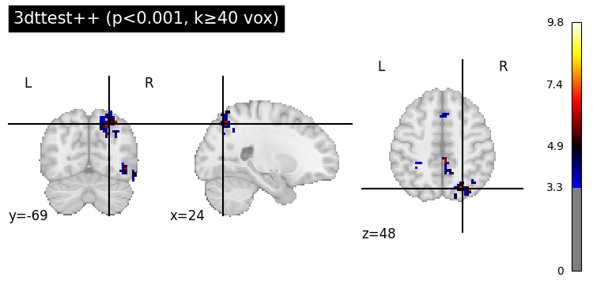
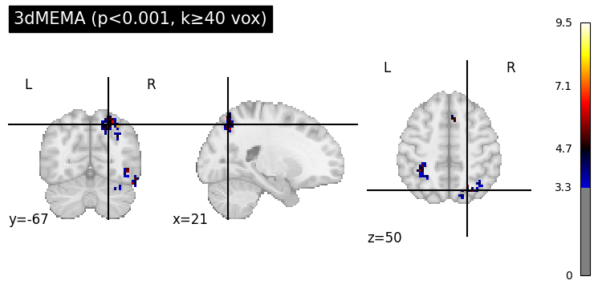
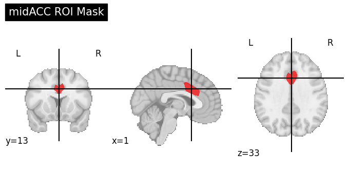

AFNI Preprocessing & Group Analysis#
Author: Monika Doerig
Citation:#
Tools included in this workflow#
AFNI
Cox RW (1996). AFNI: software for analysis and visualization of functional magnetic resonance neuroimages. Comput Biomed Res 29(3):162-173. doi:10.1006/cbmr.1996.0014
RW Cox, JS Hyde (1997). Software tools for analysis and visualization of FMRI Data. NMR in Biomedicine, 10: 171-178., https://pubmed.ncbi.nlm.nih.gov/9430344/
Workflows this work is based on#
Educational resources#
Andy’s Brain Book:
This AFNI example is based on the AFNI Tutorial: Statistics and Modeling from Andy’s Brain Book (Jahn, 2022. doi:10.5281/zenodo.5879293)
Dataset#
Flanker Dataset from OpenNeuro:
Kelly AMC and Uddin LQ and Biswal BB and Castellanos FX and Milham MP (2018). Flanker task (event-related). OpenNeuro Dataset ds000102. [Dataset] doi: null
Kelly AM, Uddin LQ, Biswal BB, Castellanos FX, Milham MP. Competition between functional brain networks mediates behavioral variability. Neuroimage. 2008 Jan 1;39(1):527-37. doi: 10.1016/j.neuroimage.2007.08.008. Epub 2007 Aug 23. PMID: 17919929.
Mennes, M., Kelly, C., Zuo, X.N., Di Martino, A., Biswal, B.B., Castellanos, F.X., Milham, M.P. (2010). Inter-individual differences in resting-state functional connectivity predict task-induced BOLD activity. Neuroimage, 50(4):1690-701. doi: 10.1016/j.neuroimage.2010.01.002. Epub 2010 Jan 15. Erratum in: Neuroimage. 2011 Mar 1;55(1):434
Mennes, M., Zuo, X.N., Kelly, C., Di Martino, A., Zang, Y.F., Biswal, B., Castellanos, F.X., Milham, M.P. (2011). Linking inter-individual differences in neural activation and behavior to intrinsic brain dynamics. Neuroimage, 54(4):2950-9. doi: 10.1016/j.neuroimage.2010.10.046ed in your example
Load packages#
import module
await module.load('afni/21.2.00')
await module.list()
Lmod Warning: MODULEPATH is undefined.
Lmod has detected the following error: The following module(s) are unknown:
"afni/21.2.00"
Please check the spelling or version number. Also try "module spider ..."
It is also possible your cache file is out-of-date; it may help to try:
$ module --ignore_cache load "afni/21.2.00"
Also make sure that all modulefiles written in TCL start with the string
#%Module
[]
Import Python Modules#
%%capture
! pip install nibabel numpy nilearn scipy
import os
from glob import glob
import subprocess
import nibabel as nib
import numpy as np
import matplotlib.pyplot as plt
from nilearn import image, plotting
from ipyniivue import NiiVue
from IPython.display import display, Markdown, Image
from scipy.stats import ttest_1samp
from concurrent.futures import ProcessPoolExecutor, as_completed
from tqdm.notebook import tqdm
1. Download Data#
# 9 subjects from the Flanker Dataset
PATTERN = "sub-0*"
!datalad install https://github.com/OpenNeuroDatasets/ds000102.git
!cd ds000102 && datalad get $PATTERN
It is highly recommended to configure Git before using DataLad. Set both 'user.name' and 'user.email' configuration variables.
Cloning: 0%| | 0.00/2.00 [00:00<?, ? candidates/s]
Enumerating: 0.00 Objects [00:00, ? Objects/s]
Counting: 0%| | 0.00/27.0 [00:00<?, ? Objects/s]
Compressing: 0%| | 0.00/23.0 [00:00<?, ? Objects/s]
Receiving: 0%| | 0.00/2.15k [00:00<?, ? Objects/s]
Resolving: 0%| | 0.00/537 [00:00<?, ? Deltas/s]
[INFO ] Remote origin not usable by git-annex; setting annex-ignore
[INFO ] https://github.com/OpenNeuroDatasets/ds000102.git/config download failed: Not Found
[INFO ] Author identity unknown
|
| *** Please tell me who you are.
|
| Run
|
| git config --global user.email "you@example.com"
| git config --global user.name "Your Name"
|
| to set your account's default identity.
| Omit --global to set the identity only in this repository.
[INFO ] fatal: unable to auto-detect email address (got 'root@f27be063dd6d.(none)')
[INFO ] git-annex: user error (git ["--git-dir=.git","--work-tree=.","--literal-pathspecs","-c","annex.dotfiles=true","commit-tree","3fc1b436d3fa71b1a46641d024626ad7e4014021","--no-gpg-sign","-p","refs/heads/git-annex"] exited 128)
install(error): /tmp/tmpxqda5h8f/ds000102 (dataset) [CommandError: 'git -c diff.ignoreSubmodules=none -c core.quotepath=false annex init -c annex.dotfiles=true' failed with exitcode 1 under /tmp/tmpxqda5h8f/ds000102] [CommandError: 'git -c diff.ignoreSubmodules=none -c core.quotepath=false annex init -c annex.dotfiles=true' failed with exitcode 1 under /tmp/tmpxqda5h8f/ds000102]
/bin/bash: line 1: cd: ds000102: No such file or directory
The data is structured in BIDS format:
!tree -L 4 ds000102
ds000102 [error opening dir]
0 directories, 0 files
Creating Timing Files#
Condition-specific timing files are generated using the same approach described in the Preprocessing and GLM notebook. In brief:
Onset times and durations are extracted from each subject’s
events.tsvfile.Trials are categorized into congruent and incongruent conditions.
The
make_Timings.shscript (from Andy’s AFNI_Scripts repository) is used to convert this event information into AFNI-compatible.1Dtiming files.For each subject, two timing files are created (one per condition), spanning both runs, and saved in the subject’s
func/directory.
These .1D timing files will then be used in the first-level GLM to model condition-specific brain responses.
!wget -O ds000102/make_Timings.sh https://raw.githubusercontent.com/andrewjahn/AFNI_Scripts/master/make_Timings.sh
ds000102/make_Timings.sh: No such file or directory
Running the Timing File Script#
After placing the make_Timings.sh script into the ds000102/ directory, we can execute it from within the notebook:
!cd ds000102 && chmod +x make_Timings.sh && bash make_Timings.sh
/bin/bash: line 1: cd: ds000102: No such file or directory
You may see a SyntaxWarning from AFNI’s internal Python scripts when running this command - this can be safely ignored and does not affect the output.
Check the output:
!cat ds000102/sub-01/func/incongruent.1D
cat: ds000102/sub-01/func/incongruent.1D: No such file or directory
2. Running Preprocessing and First-Level Analysis for All Subjects#
All of the preprocessing and regression steps for subject sub-08 were introduced and explained in the example notebooks Preprocessing with AFNI and AFNI Preprocessing and GLM, both of which are highly inspired by Andy’s Brain Book’s tutorial.
These notebooks demonstrate how to use afni_proc.py to generate an automated pipeline and interpret each preprocessing and regression block.
➡️ setup ➡️ tcat ➡️ align ➡️ volreg ➡️ tlrc ➡️ blur ➡️ mask ➡️ scale ➡️ regress 🧠
✅ Outputs: fitted time series, beta weights, and statistical maps from the GLM.
To replicate the preprocessing and GLM steps used for sub-08 across multiple participants, we loop over all 9 subjects (sub-01 to sub-09) and generate an individualized AFNI pipeline for each one using afni_proc.py. This automated approach performs several key operations:
Loads each subject’s anatomical image and both functional runs.
Specifies the full processing pipeline: alignment, linear registration to MNI space, motion correction, blurring, masking, scaling, and regression modeling.
Models two stimulus conditions (congruent and incongruent) using a gamma basis function.
Specifies two general linear tests (GLTs): incongruent - congruent and congruent - incongruent.
Censors time points with excessive motion (> 0.3 mm), disables motion derivatives, and estimates spatial smoothness for later use in group analysis.
Runs
3dREMLfitfor improved model estimation and produces a Pythonic HTML review report for each subject.
To improve alignment robustness, the script is post-edited to insert the -init_xform AUTO_CENTER option into the @auto_tlrc command as this works better on this dataset.
Processing is executed in parallel using a process pool, with up to 3 subjects processed simultaneously. Each subject’s script is saved and executed in a controlled logging environment, which captures terminal output into a log file for transparency and troubleshooting.
This block ensures consistent preprocessing and first-level GLM estimation across all subjects in the dataset.
# Create directory for output
os.makedirs("afni_pro_glm", exist_ok=True)
# Main subject processing function
def process_subject(subj_id):
subj = f"sub-{subj_id:02d}"
anat = f"./ds000102/{subj}/anat/{subj}_T1w.nii.gz"
func1 = f"./ds000102/{subj}/func/{subj}_task-flanker_run-1_bold.nii.gz"
func2 = f"./ds000102/{subj}/func/{subj}_task-flanker_run-2_bold.nii.gz"
stim1D_c = f"./ds000102/{subj}/func/congruent.1D"
stim1D_i = f"./ds000102/{subj}/func/incongruent.1D"
out_dir = f"./afni_pro_glm/{subj}.results"
script_name = f"./afni_pro_glm/proc.{subj}.tcsh"
log_file = f"./afni_pro_glm/output.{subj}.log"
# Skip subject if already processed
if os.path.exists(out_dir):
return f"{subj} skipped (already processed)"
cmd = [
"afni_proc.py",
"-subj_id", subj,
"-script", script_name,
"-scr_overwrite",
"-out_dir", out_dir,
"-blocks", "align", "tlrc", "volreg", "blur", "mask", "scale", "regress",
"-copy_anat", anat,
"-dsets", func1, func2,
"-tcat_remove_first_trs", "0",
"-align_opts_aea", "-giant_move",
"-tlrc_base", "MNI_avg152T1+tlrc",
"-volreg_align_to", "MIN_OUTLIER",
"-volreg_align_e2a",
"-volreg_tlrc_warp",
"-blur_size", "4.0",
"-regress_stim_times", stim1D_c, stim1D_i,
"-regress_stim_labels", "congruent", "incongruent",
"-regress_stim_types", "times", "times",
"-regress_basis", "GAM",
"-regress_opts_3dD",
"-gltsym", "SYM: +incongruent -congruent", "-glt_label", "1", "incongruent-congruent",
"-gltsym", "SYM: +congruent -incongruent", "-glt_label", "2", "congruent-incongruent",
"-jobs", "8", # speedup with multithreading
"-GOFORIT", "0", # safe default
"-regress_no_motion_deriv", # disables motion derivatives (simpler model)
"-regress_censor_motion", "0.3", # standard threshold
"-regress_motion_per_run", # run-wise motion parameters
"-regress_est_blur_epits",
"-regress_est_blur_errts",
"-regress_make_ideal_sum", "sum_ideal.1D",
"-regress_reml_exec",
"-regress_run_clustsim", "no", # skip, since you'll do group-level stats separately
"-html_review_style", "pythonic"
]
try:
# Step 1: Create the AFNI processing script
subprocess.run(cmd, check=True)
# Step 2: Insert -init_xform AUTO_CENTER into the @auto_tlrc command
with open(script_name, 'r') as f:
lines = f.readlines()
for i, line in enumerate(lines):
if line.strip().startswith("@auto_tlrc") and "AUTO_CENTER" not in line:
lines[i] = line.strip() + " -init_xform AUTO_CENTER\n"
with open(script_name, 'w') as f:
f.writelines(lines)
# Step 3: Run the AFNI tcsh script, logging output
with open(log_file, "w") as logfile:
proc = subprocess.Popen(
["tcsh", "-xef", script_name],
stdout=subprocess.PIPE,
stderr=subprocess.STDOUT,
text=True
)
for line in proc.stdout:
print(line, end="") # Stream to console
logfile.write(line) # Log to file
proc.wait()
return f"{subj} {'done' if proc.returncode == 0 else 'failed'}"
except subprocess.CalledProcessError as e:
return f"{subj} failed: afni_proc.py error"
except Exception as e:
return f"{subj} failed: unexpected error\n{e}"
# ──────────────────────────────────────────────────────────────────────────────
# Main loop to process multiple subjects in parallel
if __name__ == "__main__":
subject_ids = list(range(1, 10)) # sub-01 to sub-09
results = []
with ProcessPoolExecutor(max_workers=3) as executor:
futures = {executor.submit(process_subject, sid): sid for sid in subject_ids}
for future in tqdm(as_completed(futures), total=len(futures), desc="Subjects processed"):
results.append(future.result())
print("\nSummary of results:")
for r in results:
print(r)
Summary of results:
sub-02 failed: unexpected error
[Errno 2] No such file or directory: 'afni_proc.py'
sub-01 failed: unexpected error
[Errno 2] No such file or directory: 'afni_proc.py'
sub-03 failed: unexpected error
[Errno 2] No such file or directory: 'afni_proc.py'
sub-04 failed: unexpected error
[Errno 2] No such file or directory: 'afni_proc.py'
sub-05 failed: unexpected error
[Errno 2] No such file or directory: 'afni_proc.py'
sub-06 failed: unexpected error
[Errno 2] No such file or directory: 'afni_proc.py'
sub-08 failed: unexpected error
[Errno 2] No such file or directory: 'afni_proc.py'
sub-09 failed: unexpected error
[Errno 2] No such file or directory: 'afni_proc.py'
sub-07 failed: unexpected error
[Errno 2] No such file or directory: 'afni_proc.py'
3. Group - Analysis#
After estimating the first-level general linear model (GLM) for each subject, we will perform a group-level analysis to assess whether the Incongruent - Congruent contrast showed a consistent effect across subjects.
Creating a Group Mask#
First, we’ll create a group-level mask by combining each subject’s individual mask using a logical union. This ensures that only voxels present in all subjects’ data are included in the group analysis:
! 3dmask_tool -input afni_pro_glm/sub-*.results/mask_group+tlrc.HEAD -prefix ./afni_pro_glm/group_mask+tlrc -union
/bin/bash: line 1: 3dmask_tool: command not found
3.1 Group-Level Analysis with 3dttest++#
AFNI’s 3dttest++ performs a voxelwise one-sample t-test across subjects. This tests whether the average contrast estimate (e.g., Incongruent - Congruent) is significantly different from zero at each voxel.oxelwise t-scoresariability.
Identifying Contrast Sub-Brick#
Before running the group-level test, we must determine which sub-brick contains the desired contrast. We use 3dinfo to inspect the subject-level stats+tlrc dataset and find the index of the contrast sub-brick corresponding to incongruent minus congruent (e.g., sub-brick #7, depending on how GLTs were defined in afni_proc.py):
! 3dinfo -verb ./afni_pro_glm/sub-08.results/stats.sub-08+tlrc.BRIK
/bin/bash: line 1: 3dinfo: command not found
This command lists all sub-bricks with their labels, allowing us to find the relevant contrast parameter estimate:
-- At sub-brick #7 'incongruent-congruent_GLT#0_Coef' datum type is float: -19.9548 to 21.7222
Sub-bricks labeled with “Coef” represent contrast (beta) estimates, while “Tstat” or “Fstat” indicate test statistics. For group analysis, we will extract the Coef sub-brick (here: index [7]).
We then automate the 3dttest++ execution with the following steps:
- Set the base directory containing all subjects’ AFNI result folders. **
Locate sub-brick
[**7]for each subject (the contrast of interest).**Verify dat**aset existence to avoid processing missing subjects.
Construct the
3dttest++command with:An output prefix for group results,
A group brain mask to constrain the analysis,
A label for the subject set (
Inc-Con),Subpaired with their corresponding contrast sub-brick pathssti**mates.
Run **the command using
subprocess.run()to capture and log output.
The resulting dataset (Flanker_Inc-Con_ttest+tlrc) contains:
Effect size map: average contrast values across subjects
T-statistic map: voxelwise t-values representing statistical significance
base_dir = os.path.abspath("./afni_pro_glm")
# Get all subject folders
subject_dirs = sorted(glob(os.path.join(base_dir, "sub-*.results")))
# Build paths to sub-brik 7 (e.g. Inc-Con contrast)
set_lines = []
for s in subject_dirs:
sub_id = os.path.basename(s).replace('.results', '')
stats_path = os.path.join(s, f"stats.{sub_id}+tlrc[7]")
if os.path.exists(stats_path.replace('[7]', '.BRIK')) or os.path.exists(stats_path): # extra check
set_lines.append(f"{sub_id} {stats_path}")
else:
print(f"⚠️ Missing file for subject {sub_id}: {stats_path}")
# Build 3dttest++ command
cmd_list = [
"3dttest++",
"-prefix", os.path.join(base_dir, "group_results", "Flanker-Inc-Con_ttest"),
"-mask", os.path.join(base_dir, "group_mask+tlrc"),
"-setA", "Inc-Con"
]
# Add subject lines
for line in set_lines:
cmd_list += line.split()
# Run the command
print("Running 3dttest++...")
print("\n")
print("Command:", " ".join(cmd_list))
result = subprocess.run(cmd_list, capture_output=True, text=True)
# Show output
print(result.stdout)
print(result.stderr)
Running 3dttest++...
Command: 3dttest++ -prefix /tmp/tmpxqda5h8f/afni_pro_glm/group_results/Flanker-Inc-Con_ttest -mask /tmp/tmpxqda5h8f/afni_pro_glm/group_mask+tlrc -setA Inc-Con
---------------------------------------------------------------------------
FileNotFoundError Traceback (most recent call last)
Cell In[12], line 32
30 print("\n")
31 print("Command:", " ".join(cmd_list))
---> 32 result = subprocess.run(cmd_list, capture_output=True, text=True)
34 # Show output
35 print(result.stdout)
File /opt/conda/lib/python3.13/subprocess.py:554, in run(input, capture_output, timeout, check, *popenargs, **kwargs)
551 kwargs['stdout'] = PIPE
552 kwargs['stderr'] = PIPE
--> 554 with Popen(*popenargs, **kwargs) as process:
555 try:
556 stdout, stderr = process.communicate(input, timeout=timeout)
File /opt/conda/lib/python3.13/subprocess.py:1039, in Popen.__init__(self, args, bufsize, executable, stdin, stdout, stderr, preexec_fn, close_fds, shell, cwd, env, universal_newlines, startupinfo, creationflags, restore_signals, start_new_session, pass_fds, user, group, extra_groups, encoding, errors, text, umask, pipesize, process_group)
1035 if self.text_mode:
1036 self.stderr = io.TextIOWrapper(self.stderr,
1037 encoding=encoding, errors=errors)
-> 1039 self._execute_child(args, executable, preexec_fn, close_fds,
1040 pass_fds, cwd, env,
1041 startupinfo, creationflags, shell,
1042 p2cread, p2cwrite,
1043 c2pread, c2pwrite,
1044 errread, errwrite,
1045 restore_signals,
1046 gid, gids, uid, umask,
1047 start_new_session, process_group)
1048 except:
1049 # Cleanup if the child failed starting.
1050 for f in filter(None, (self.stdin, self.stdout, self.stderr)):
File /opt/conda/lib/python3.13/subprocess.py:1972, in Popen._execute_child(self, args, executable, preexec_fn, close_fds, pass_fds, cwd, env, startupinfo, creationflags, shell, p2cread, p2cwrite, c2pread, c2pwrite, errread, errwrite, restore_signals, gid, gids, uid, umask, start_new_session, process_group)
1970 err_msg = os.strerror(errno_num)
1971 if err_filename is not None:
-> 1972 raise child_exception_type(errno_num, err_msg, err_filename)
1973 else:
1974 raise child_exception_type(errno_num, err_msg)
FileNotFoundError: [Errno 2] No such file or directory: '3dttest++'
This code snippet automates running AFNI’s 3dttest++ for a group analysis of the Incongruent - Congruent contrast:
Set the base directory where all subjects’ AFNI results are stored.
Find all subject result folders matching the pattern
sub-*.results.Build a list of dataset paths pointing to the 7th sub-brick
[7](the contrast of interest) in each subject’s stats dataset, verifying file existence and alerting if missing.Construct the
3dttest++command with:Output prefix for group results,
Group mask to restrict the test to voxels common across subjects,
Label for the group set (
Inc-Con),Subject IDs paired with their corresponding contrast sub-brick paths.
Run the command as a subprocess, capturing and printing AFNI’s output and errors for review.
The resulting output (Flanker_Inc-Con_ttest+tlrc) contains:
Effect size map: average contrast across subjects
T-statistic map: voxelwise t-sores
3.2 Performing Group Analysis with 3dMEMA#
To account for both the variability within subjects (parameter estimate differences) and the variability across subjects (contrast estimate precision), we will also perform a group-level analysis using AFNI’s 3dMEMA.
Unlike a simple t-test, 3dMEMA leverages each subject’s contrast estimate and corresponding t-statistic (or standard error), providing a more accurate mixed-effects model.
The steps we will take are:
Build a set list containing each subject’s ID along with the paths to their contrast estimate (
_REML+tlrc[7]) and t-statistic (_REML+tlrc[8]) sub-bricks.Verify that both files exist for each subject to avoid missing data errors.
Construct the
3dMEMAcommand with an output prefix, the group mask, and the full subject set list.Run the command as a subprocess, capturing output for review.
This process will produce a group-level statistical map that balances effect size and reliability, offering a robust inference about the Incongruent - Congruent contrast across subjects.
# Build set list: all subjects in one set block
set_list = ["-set", "IncCon"]
for s in subject_dirs:
sub_id = os.path.basename(s).replace(".results", "")
coef_path = os.path.join(s, f"stats.{sub_id}_REML+tlrc[7]")
tstat_path = os.path.join(s, f"stats.{sub_id}_REML+tlrc[8]")
# Sanity check (optional)
if os.path.exists(coef_path.replace("[7]", ".HEAD")) and os.path.exists(tstat_path.replace("[8]", ".HEAD")):
set_list += [sub_id, coef_path, tstat_path]
else:
print(f"⚠️ Missing for {sub_id}:\n {coef_path}\n {tstat_path}")
# Full 3dMEMA command
cmd_list = [
"3dMEMA",
"-prefix", os.path.join(base_dir, "group_results", "Flanker_Inc-Con_MEMA"),
"-mask", os.path.join(base_dir, "group_mask+tlrc"),
] + set_list
# Print and run
print("Running 3dMEMA...\n")
print("Command:", " ".join(cmd_list), "\n")
result = subprocess.run(cmd_list, capture_output=True, text=True)
print(result.stdout)
print(result.stderr)
Running 3dMEMA...
Command: 3dMEMA -prefix /home/jovyan/Git_repositories/example-notebooks/books/functional_imaging/afni_pro_glm/group_results/Flanker_Inc-Con_MEMA -mask /home/jovyan/Git_repositories/example-notebooks/books/functional_imaging/afni_pro_glm/group_mask+tlrc -set IncCon sub-01 /home/jovyan/Git_repositories/example-notebooks/books/functional_imaging/afni_pro_glm/sub-01.results/stats.sub-01_REML+tlrc[7] /home/jovyan/Git_repositories/example-notebooks/books/functional_imaging/afni_pro_glm/sub-01.results/stats.sub-01_REML+tlrc[8] sub-02 /home/jovyan/Git_repositories/example-notebooks/books/functional_imaging/afni_pro_glm/sub-02.results/stats.sub-02_REML+tlrc[7] /home/jovyan/Git_repositories/example-notebooks/books/functional_imaging/afni_pro_glm/sub-02.results/stats.sub-02_REML+tlrc[8] sub-03 /home/jovyan/Git_repositories/example-notebooks/books/functional_imaging/afni_pro_glm/sub-03.results/stats.sub-03_REML+tlrc[7] /home/jovyan/Git_repositories/example-notebooks/books/functional_imaging/afni_pro_glm/sub-03.results/stats.sub-03_REML+tlrc[8] sub-04 /home/jovyan/Git_repositories/example-notebooks/books/functional_imaging/afni_pro_glm/sub-04.results/stats.sub-04_REML+tlrc[7] /home/jovyan/Git_repositories/example-notebooks/books/functional_imaging/afni_pro_glm/sub-04.results/stats.sub-04_REML+tlrc[8] sub-05 /home/jovyan/Git_repositories/example-notebooks/books/functional_imaging/afni_pro_glm/sub-05.results/stats.sub-05_REML+tlrc[7] /home/jovyan/Git_repositories/example-notebooks/books/functional_imaging/afni_pro_glm/sub-05.results/stats.sub-05_REML+tlrc[8] sub-06 /home/jovyan/Git_repositories/example-notebooks/books/functional_imaging/afni_pro_glm/sub-06.results/stats.sub-06_REML+tlrc[7] /home/jovyan/Git_repositories/example-notebooks/books/functional_imaging/afni_pro_glm/sub-06.results/stats.sub-06_REML+tlrc[8] sub-07 /home/jovyan/Git_repositories/example-notebooks/books/functional_imaging/afni_pro_glm/sub-07.results/stats.sub-07_REML+tlrc[7] /home/jovyan/Git_repositories/example-notebooks/books/functional_imaging/afni_pro_glm/sub-07.results/stats.sub-07_REML+tlrc[8] sub-08 /home/jovyan/Git_repositories/example-notebooks/books/functional_imaging/afni_pro_glm/sub-08.results/stats.sub-08_REML+tlrc[7] /home/jovyan/Git_repositories/example-notebooks/books/functional_imaging/afni_pro_glm/sub-08.results/stats.sub-08_REML+tlrc[8] sub-09 /home/jovyan/Git_repositories/example-notebooks/books/functional_imaging/afni_pro_glm/sub-09.results/stats.sub-09_REML+tlrc[7] /home/jovyan/Git_repositories/example-notebooks/books/functional_imaging/afni_pro_glm/sub-09.results/stats.sub-09_REML+tlrc[8]
[1] "-----------------"
[1] "Totally 61 slices in the volume data."
[1] "Starting to analyze data slice-wise. Running progression shown below:"
[1] "-----------------"
Z slice # 1 done: 11/04/25 05:20:20.846
Z slice # 2 done: 11/04/25 05:20:21.102
Z slice # 3 done: 11/04/25 05:20:21.405
Z slice # 4 done: 11/04/25 05:20:21.744
Z slice # 5 done: 11/04/25 05:20:22.224
Z slice # 6 done: 11/04/25 05:20:22.743
Z slice # 7 done: 11/04/25 05:20:23.239
Z slice # 8 done: 11/04/25 05:20:23.805
Z slice # 9 done: 11/04/25 05:20:24.481
Z slice # 10 done: 11/04/25 05:20:25.288
Z slice # 11 done: 11/04/25 05:20:26.118
Z slice # 12 done: 11/04/25 05:20:28.067
Z slice # 13 done: 11/04/25 05:20:28.915
Z slice # 14 done: 11/04/25 05:20:29.912
Z slice # 15 done: 11/04/25 05:20:30.910
Z slice # 16 done: 11/04/25 05:20:31.913
Z slice # 17 done: 11/04/25 05:20:33.018
Z slice # 18 done: 11/04/25 05:20:34.212
Z slice # 19 done: 11/04/25 05:20:35.392
Z slice # 20 done: 11/04/25 05:20:36.512
Z slice # 21 done: 11/04/25 05:20:37.653
Z slice # 22 done: 11/04/25 05:20:38.770
Z slice # 23 done: 11/04/25 05:20:40.007
Z slice # 24 done: 11/04/25 05:20:41.220
Z slice # 25 done: 11/04/25 05:20:42.504
Z slice # 26 done: 11/04/25 05:20:43.786
Z slice # 27 done: 11/04/25 05:20:45.005
Z slice # 28 done: 11/04/25 05:20:46.204
Z slice # 29 done: 11/04/25 05:20:47.372
Z slice # 30 done: 11/04/25 05:20:48.487
Z slice # 31 done: 11/04/25 05:20:49.563
Z slice # 32 done: 11/04/25 05:20:50.668
Z slice # 33 done: 11/04/25 05:20:51.756
Z slice # 34 done: 11/04/25 05:20:52.830
Z slice # 35 done: 11/04/25 05:20:53.897
Z slice # 36 done: 11/04/25 05:20:54.934
Z slice # 37 done: 11/04/25 05:20:56.057
Z slice # 38 done: 11/04/25 05:20:57.130
Z slice # 39 done: 11/04/25 05:20:58.124
Z slice # 40 done: 11/04/25 05:20:59.131
Z slice # 41 done: 11/04/25 05:21:00.167
Z slice # 42 done: 11/04/25 05:21:01.132
Z slice # 43 done: 11/04/25 05:21:02.026
Z slice # 44 done: 11/04/25 05:21:02.877
Z slice # 45 done: 11/04/25 05:21:03.630
Z slice # 46 done: 11/04/25 05:21:04.346
Z slice # 47 done: 11/04/25 05:21:04.878
Z slice # 48 done: 11/04/25 05:21:05.357
Z slice # 49 done: 11/04/25 05:21:05.734
Z slice # 50 done: 11/04/25 05:21:06.109
Z slice # 51 done: 11/04/25 05:21:06.463
Z slice # 52 done: 11/04/25 05:21:06.781
Z slice # 53 done: 11/04/25 05:21:07.041
Z slice # 54 done: 11/04/25 05:21:07.290
Z slice # 55 done: 11/04/25 05:21:07.543
Z slice # 56 done: 11/04/25 05:21:07.802
Z slice # 57 done: 11/04/25 05:21:08.055
Z slice # 58 done: 11/04/25 05:21:08.309
Z slice # 59 done: 11/04/25 05:21:08.562
Z slice # 60 done: 11/04/25 05:21:08.820
Z slice # 61 done: 11/04/25 05:21:09.075
[1] "Analysis finished: 11/04/25 05:21:09.077"
[1] "#++++++++++++++++++++++++++++++++++++++++++++"
[1] "system is computationally singular: reciprocal condition number = 0"
There were 50 or more warnings (use warnings() to see the first 50)
++ Smallest FDR q [1 IncCon:t] = 0.0805103
*+ WARNING: Smallest FDR q [3 QE:Chisq] = 0.102273 ==> few true single voxel detections
3.3 Visualizing Group-Level Results#
Now that we have completed both group analyses — one with 3dttest++ and one with 3dMEMA — let’s visualize the resulting voxelwise t-statistic maps.
Steps:#
Convert AFNI datasets to NIfTI format using
3dcopy, to ensure compatibility with Python neuroimaging tools likenilearn.Extract the t-statistic sub-brick (sub-brick index
[1]) using3dTcat. This gives us:Inc-Con_Tstatfrom the3dttest++resultIncCon_Tstatfrom the3dMEMAresult
Load the statistical maps into Python using
nilearn.image.load_img().Apply voxelwise thresholding:
A two-tailed threshold of T > 3.3
A minimum cluster size of 40 contiguous voxels
This reduces noise and highlights clusters likely to reflect meaningful effects.
Note on Multiple Comparison Correction:
Cluster-size correction using3dClustSimrequires stable estimates of spatial smoothness, which generally requires at least 14 subjects.
Since our analysis includes only 9 subjects, we do not apply3dClustSimor other parametric corrections.
Instead, we apply an uncorrected voxelwise threshold (T > 3.3) with a minimum cluster size of 40 voxels.
This approach is intended for exploratory visualization only and should not be used for formal statistical inference.Plot the thresholded maps using
nilearn.plotting.plot_stat_map()to qualitatively compare the spatial activation patterns between the two group-level methods.
This approach allows us to visually inspect and compare the sensitivity and spatial extent of effects revealed by the simple one-sample t-test (3dttest++) and the mixed-effects model (3dMEMA) for the Incongruent - Congruent contrast.
! 3dcopy ./afni_pro_glm/group_results/Flanker-Inc-Con_ttest+tlrc ./afni_pro_glm/group_results/Flanker-Inc-Con_ttest.nii.gz
! 3dcopy ./afni_pro_glm/group_results/Flanker_Inc-Con_MEMA+tlrc ./afni_pro_glm/group_results/Flanker_Inc-Con_MEMA.nii.gz
++ 3dcopy: AFNI version=AFNI_21.2.00 (Jul 8 2021) [64-bit]
++ 3dcopy: AFNI version=AFNI_21.2.00 (Jul 8 2021) [64-bit]
! 3dinfo -verb ./afni_pro_glm/group_results/Flanker-Inc-Con_ttest.nii.gz
++ 3dinfo: AFNI version=AFNI_21.2.00 (Jul 8 2021) [64-bit]
Dataset File: /home/jovyan/Git_repositories/example-notebooks/books/functional_imaging/afni_pro_glm/group_results/Flanker-Inc-Con_ttest.nii.gz
Identifier Code: XYZ_e6jy6nwqCv_6fUYGSp5k8w Creation Date: Tue Nov 4 05:21:10 2025
Template Space: MNI
Dataset Type: Anat Bucket (-abuc)
Byte Order: LSB_FIRST {assumed} [this CPU native = LSB_FIRST]
Storage Mode: NIFTI
Storage Space: 2,173,064 (2.2 million) bytes
Geometry String: "MATRIX(-3,0,0,90,0,-3,0,126,0,0,3,-72):61,73,61"
Data Axes Tilt: Plumb
Data Axes Orientation:
first (x) = Left-to-Right
second (y) = Posterior-to-Anterior
third (z) = Inferior-to-Superior [-orient LPI]
R-to-L extent: -90.000 [R] -to- 90.000 [L] -step- 3.000 mm [ 61 voxels]
A-to-P extent: -90.000 [A] -to- 126.000 [P] -step- 3.000 mm [ 73 voxels]
I-to-S extent: -72.000 [I] -to- 108.000 [S] -step- 3.000 mm [ 61 voxels]
Number of values stored at each pixel = 2
-- At sub-brick #0 'Inc-Con_mean' datum type is float: -2.86885 to 2.65067
-- At sub-brick #1 'Inc-Con_Tstat' datum type is float: -7.60381 to 9.81179
statcode = fitt; statpar = 8
----- HISTORY -----
[jovyan@jupyter-monidoerig: Tue Nov 4 05:20:07 2025] {AFNI_21.2.00:linux_openmp_64} 3dttest++ -prefix /home/jovyan/Git_repositories/example-notebooks/books/functional_imaging/afni_pro_glm/group_results/Flanker-Inc-Con_ttest -mask /home/jovyan/Git_repositories/example-notebooks/books/functional_imaging/afni_pro_glm/group_mask+tlrc -setA Inc-Con sub-01 '/home/jovyan/Git_repositories/example-notebooks/books/functional_imaging/afni_pro_glm/sub-01.results/stats.sub-01+tlrc[7]' sub-02 '/home/jovyan/Git_repositories/example-notebooks/books/functional_imaging/afni_pro_glm/sub-02.results/stats.sub-02+tlrc[7]' sub-03 '/home/jovyan/Git_repositories/example-notebooks/books/functional_imaging/afni_pro_glm/sub-03.results/stats.sub-03+tlrc[7]' sub-04 '/home/jovyan/Git_repositories/example-notebooks/books/functional_imaging/afni_pro_glm/sub-04.results/stats.sub-04+tlrc[7]' sub-05 '/home/jovyan/Git_repositories/example-notebooks/books/functional_imaging/afni_pro_glm/sub-05.results/stats.sub-05+tlrc[7]' sub-06 '/home/jovyan/Git_repositories/example-notebooks/books/functional_imaging/afni_pro_glm/sub-06.results/stats.sub-06+tlrc[7]' sub-07 '/home/jovyan/Git_repositories/example-notebooks/books/functional_imaging/afni_pro_glm/sub-07.results/stats.sub-07+tlrc[7]' sub-08 '/home/jovyan/Git_repositories/example-notebooks/books/functional_imaging/afni_pro_glm/sub-08.results/stats.sub-08+tlrc[7]' sub-09 '/home/jovyan/Git_repositories/example-notebooks/books/functional_imaging/afni_pro_glm/sub-09.results/stats.sub-09+tlrc[7]'
[jovyan@jupyter-monidoerig: Tue Nov 4 05:21:10 2025] {AFNI_21.2.00:linux_openmp_64} 3dcopy ./afni_pro_glm/group_results/Flanker-Inc-Con_ttest+tlrc ./afni_pro_glm/group_results/Flanker-Inc-Con_ttest.nii.gz
# Copy sub-brik 1 (T-statistic) for ttest++
!3dTcat -prefix ./afni_pro_glm/group_results/Flanker-Inc-Con_ttest_Tstat.nii.gz './afni_pro_glm/group_results/Flanker-Inc-Con_ttest+tlrc[1]'
# Copy sub-brik 1 (T-statistic) for MEMA
!3dTcat -prefix ./afni_pro_glm/group_results/Flanker_Inc-Con_MEMA_Tstat.nii.gz './afni_pro_glm/group_results/Flanker_Inc-Con_MEMA+tlrc[1]'
++ 3dTcat: AFNI version=AFNI_21.2.00 (Jul 8 2021) [64-bit]
++ elapsed time = 0.1 s
++ 3dTcat: AFNI version=AFNI_21.2.00 (Jul 8 2021) [64-bit]
++ elapsed time = 0.1 s
# Load T-stat map (3dttest++ and 3dMEMA results)
img_ttest = image.load_img("./afni_pro_glm/group_results/Flanker-Inc-Con_ttest_Tstat.nii.gz")
img_mema = image.load_img("./afni_pro_glm/group_results/Flanker_Inc-Con_MEMA_Tstat.nii.gz")
threshold = 3.3
# Apply uncorrected voxel threshold (T > 3.3 ≈ p < 0.001)
# and minimum cluster size of 40 voxels
thresholded_img_ttest = image.threshold_img(
img_ttest,
threshold=threshold,
cluster_threshold=40,
two_sided=True,
copy_header=True
)
thresholded_img_mema = image.threshold_img(
img_mema,
threshold=threshold,
cluster_threshold=40,
two_sided=True,
copy_header=True
)
# Plot result
plotting.plot_stat_map(
thresholded_img_ttest,
title="3dttest++ (p<0.001, k≥40 vox)",
threshold=threshold,
colorbar=True
)
plotting.plot_stat_map(
thresholded_img_mema,
title="3dMEMA (p<0.001, k≥40 vox)",
threshold=threshold,
colorbar=True
)
plotting.show()


4. ROI Analysis#
4.1 ROI Analysis: Atlas-Based MidACC Mask#
To investigate group-level effects within a specific anatomical region, we use an atlas-based Region of Interest (ROI) mask focusing on the mid anterior cingulate cortex (midACC).
1. Identify Available Atlases:
We begin by confirming the available atlases using:
!whereami -show_atlas_code
This lists all atlases bundled with AFNI.
! whereami -show_atlas_code
++ Input coordinates orientation set by default rules to RAI
Atlas MNI_Glasser_HCP_v1.0, 360 regions
----------- Begin regions for MNI_Glasser_HCP_v1.0 atlas-----------
u:L_Primary_Visual_Cortex:1
u:R_Primary_Visual_Cortex:1001
u:L_Medial_Superior_Temporal_Area:2
u:R_Medial_Superior_Temporal_Area:1002
u:L_Sixth_Visual_Area:3
u:R_Sixth_Visual_Area:1003
u:L_Second_Visual_Area:4
u:R_Second_Visual_Area:1004
u:L_Third_Visual_Area:5
u:R_Third_Visual_Area:1005
u:L_Fourth_Visual_Area:6
u:R_Fourth_Visual_Area:1006
u:L_Eighth_Visual_Area:7
u:R_Eighth_Visual_Area:1007
u:L_Primary_Motor_Cortex:8
u:R_Primary_Motor_Cortex:1008
u:L_Primary_Sensory_Cortex:9
u:R_Primary_Sensory_Cortex:1009
u:L_Frontal_Eye_Fields:10
u:R_Frontal_Eye_Fields:1010
u:L_Premotor_Eye_Fields:11
u:R_Premotor_Eye_Fields:1011
u:L_Area_55b:12
u:R_Area_55b:1012
u:L_Area_V3A:13
u:R_Area_V3A:1013
u:L_RetroSplenial_Complex:14
u:R_RetroSplenial_Complex:1014
u:L_Parieto-Occipital_Sulcus_Area_2:15
u:R_Parieto-Occipital_Sulcus_Area_2:1015
u:L_Seventh_Visual_Area:16
u:R_Seventh_Visual_Area:1016
u:L_IntraParietal_Sulcus_Area_1:17
u:R_IntraParietal_Sulcus_Area_1:1017
u:L_Fusiform_Face_Complex:18
u:R_Fusiform_Face_Complex:1018
u:L_Area_V3B:19
u:R_Area_V3B:1019
u:L_Area_Lateral_Occipital_1:20
u:R_Area_Lateral_Occipital_1:1020
u:L_Area_Lateral_Occipital_2:21
u:R_Area_Lateral_Occipital_2:1021
u:L_Posterior_InferoTemporal:22
u:R_Posterior_InferoTemporal:1022
u:L_Middle_Temporal_Area:23
u:R_Middle_Temporal_Area:1023
u:L_Primary_Auditory_Cortex:24
u:R_Primary_Auditory_Cortex:1024
u:L_PeriSylvian_Language_Area:25
u:R_PeriSylvian_Language_Area:1025
u:L_Superior_Frontal_Language_Area:26
u:R_Superior_Frontal_Language_Area:1026
u:L_PreCuneus_Visual_Area:27
u:R_PreCuneus_Visual_Area:1027
u:L_Superior_Temporal_Visual_Area:28
u:R_Superior_Temporal_Visual_Area:1028
u:L_Medial_Area_7P:29
u:R_Medial_Area_7P:1029
u:L_Area_7m:30
u:R_Area_7m:1030
u:L_Parieto-Occipital_Sulcus_Area_1:31
u:R_Parieto-Occipital_Sulcus_Area_1:1031
u:L_Area_23d:32
u:R_Area_23d:1032
u:L_Area_ventral_23_a+b:33
u:R_Area_ventral_23_a+b:1033
u:L_Area_dorsal_23_a+b:34
u:R_Area_dorsal_23_a+b:1034
u:L_Area_31p_ventral:35
u:R_Area_31p_ventral:1035
u:L_Area_5m:36
u:R_Area_5m:1036
u:L_Area_5m_ventral:37
u:R_Area_5m_ventral:1037
u:L_Area_23c:38
u:R_Area_23c:1038
u:L_Area_5L:39
u:R_Area_5L:1039
u:L_Dorsal_Area_24d:40
u:R_Dorsal_Area_24d:1040
u:L_Ventral_Area_24d:41
u:R_Ventral_Area_24d:1041
u:L_Lateral_Area_7A:42
u:R_Lateral_Area_7A:1042
u:L_Supplementary_And_Cingulate_Eye:43
u:R_Supplementary_And_Cingulate_Eye:1043
u:L_Area_6m_anterior:44
u:R_Area_6m_anterior:1044
u:L_Medial_Area_7A:45
u:R_Medial_Area_7A:1045
u:L_Lateral_Area_7P:46
u:R_Lateral_Area_7P:1046
u:L_Area_7PC:47
u:R_Area_7PC:1047
u:L_Area_Lateral_IntraParietal_ventral:48
u:R_Area_Lateral_IntraParietal_ventral:1048
u:L_Ventral_IntraParietal_Complex:49
u:R_Ventral_IntraParietal_Complex:1049
u:L_Medial_IntraParietal_Area:50
u:R_Medial_IntraParietal_Area:1050
u:L_Area_1:51
u:R_Area_1:1051
u:L_Area_2:52
u:R_Area_2:1052
u:L_Area_3a:53
u:R_Area_3a:1053
u:L_Dorsal_area_6:54
u:R_Dorsal_area_6:1054
u:L_Area_6mp:55
u:R_Area_6mp:1055
u:L_Ventral_Area_6:56
u:R_Ventral_Area_6:1056
u:L_Area_Posterior_24_prime:57
u:R_Area_Posterior_24_prime:1057
u:L_Area_33_prime:58
u:R_Area_33_prime:1058
u:L_Anterior_24_prime:59
u:R_Anterior_24_prime:1059
u:L_Area_p32_prime:60
u:R_Area_p32_prime:1060
u:L_Area_a24:61
u:R_Area_a24:1061
u:L_Area_dorsal_32:62
u:R_Area_dorsal_32:1062
u:L_Area_8BM:63
u:R_Area_8BM:1063
u:L_Area_p32:64
u:R_Area_p32:1064
u:L_Area_10r:65
u:R_Area_10r:1065
u:L_Area_47m:66
u:R_Area_47m:1066
u:L_Area_8Av:67
u:R_Area_8Av:1067
u:L_Area_8Ad:68
u:R_Area_8Ad:1068
u:L_Area_9_Middle:69
u:R_Area_9_Middle:1069
u:L_Area_8B_Lateral:70
u:R_Area_8B_Lateral:1070
u:L_Area_9_Posterior:71
u:R_Area_9_Posterior:1071
u:L_Area_10d:72
u:R_Area_10d:1072
u:L_Area_8C:73
u:R_Area_8C:1073
u:L_Area_44:74
u:R_Area_44:1074
u:L_Area_45:75
u:R_Area_45:1075
u:L_Area_47l_(47_lateral):76
u:R_Area_47l_(47_lateral):1076
u:L_Area_anterior_47r:77
u:R_Area_anterior_47r:1077
u:L_Rostral_Area_6:78
u:R_Rostral_Area_6:1078
u:L_Area_IFJa:79
u:R_Area_IFJa:1079
u:L_Area_IFJp:80
u:R_Area_IFJp:1080
u:L_Area_IFSp:81
u:R_Area_IFSp:1081
u:L_Area__IFSa:82
u:R_Area__IFSa:1082
u:L_Area_posterior_9-46v:83
u:R_Area_posterior_9-46v:1083
u:L_Area_46:84
u:R_Area_46:1084
u:L_Area_anterior_9-46v:85
u:R_Area_anterior_9-46v:1085
u:L_Area_9-46d:86
u:R_Area_9-46d:1086
u:L_Area_9_anterior:87
u:R_Area_9_anterior:1087
u:L_Area_10v:88
u:R_Area_10v:1088
u:L_Area_anterior_10p:89
u:R_Area_anterior_10p:1089
u:L_Polar_10p:90
u:R_Polar_10p:1090
u:L_Area_11l:91
u:R_Area_11l:1091
u:L_Area_13l:92
u:R_Area_13l:1092
u:L_Orbital_Frontal_Complex:93
u:R_Orbital_Frontal_Complex:1093
u:L_Area_47s:94
u:R_Area_47s:1094
u:L_Area_Lateral_IntraParietal_dorsal:95
u:R_Area_Lateral_IntraParietal_dorsal:1095
u:L_Area_6_anterior:96
u:R_Area_6_anterior:1096
u:L_Inferior_6-8_Transitional_Area:97
u:R_Inferior_6-8_Transitional_Area:1097
u:L_Superior_6-8_Transitional_Area:98
u:R_Superior_6-8_Transitional_Area:1098
u:L_Area_43:99
u:R_Area_43:1099
u:L_Area_OP4/PV:100
u:R_Area_OP4/PV:1100
u:L_Area_OP1/SII:101
u:R_Area_OP1/SII:1101
u:L_Area_OP2-3/VS:102
u:R_Area_OP2-3/VS:1102
u:L_Area_52:103
u:R_Area_52:1103
u:L_RetroInsular_Cortex:104
u:R_RetroInsular_Cortex:1104
u:L_Area_PFcm:105
u:R_Area_PFcm:1105
u:L_Posterior_Insular_Area_2:106
u:R_Posterior_Insular_Area_2:1106
u:L_Area_TA2:107
u:R_Area_TA2:1107
u:L_Frontal_Opercular_Area_4:108
u:R_Frontal_Opercular_Area_4:1108
u:L_Middle_Insular_Area:109
u:R_Middle_Insular_Area:1109
u:L_Piriform_Cortex:110
u:R_Piriform_Cortex:1110
u:L_Anterior_Ventral_Insular_Area:111
u:R_Anterior_Ventral_Insular_Area:1111
u:L_Anterior_Agranular_Insula_Complex:112
u:R_Anterior_Agranular_Insula_Complex:1112
u:L_Frontal_Opercular_Area_1:113
u:R_Frontal_Opercular_Area_1:1113
u:L_Frontal_Opercular_Area_3:114
u:R_Frontal_Opercular_Area_3:1114
u:L_Frontal_Opercular_Area_2:115
u:R_Frontal_Opercular_Area_2:1115
u:L_Area_PFt:116
u:R_Area_PFt:1116
u:L_Anterior_IntraParietal_Area:117
u:R_Anterior_IntraParietal_Area:1117
u:L_Entorhinal_Cortex:118
u:R_Entorhinal_Cortex:1118
u:L_PreSubiculum:119
u:R_PreSubiculum:1119
u:L_Hippocampus:120
u:R_Hippocampus:1120
u:L_ProStriate_Area:121
u:R_ProStriate_Area:1121
u:L_Perirhinal_Ectorhinal_Cortex:122
u:R_Perirhinal_Ectorhinal_Cortex:1122
u:L_Area_STGa:123
u:R_Area_STGa:1123
u:L_ParaBelt_Complex:124
u:R_ParaBelt_Complex:1124
u:L_Auditory_5_Complex:125
u:R_Auditory_5_Complex:1125
u:L_ParaHippocampal_Area_1:126
u:R_ParaHippocampal_Area_1:1126
u:L_ParaHippocampal_Area_3:127
u:R_ParaHippocampal_Area_3:1127
u:L_Area_STSd_anterior:128
u:R_Area_STSd_anterior:1128
u:L_Area_STSd_posterior:129
u:R_Area_STSd_posterior:1129
u:L_Area_STSv_posterior:130
u:R_Area_STSv_posterior:1130
u:L_Area_TG_dorsal:131
u:R_Area_TG_dorsal:1131
u:L_Area_TE1_anterior:132
u:R_Area_TE1_anterior:1132
u:L_Area_TE1_posterior:133
u:R_Area_TE1_posterior:1133
u:L_Area_TE2_anterior:134
u:R_Area_TE2_anterior:1134
u:L_Area_TF:135
u:R_Area_TF:1135
u:L_Area_TE2_posterior:136
u:R_Area_TE2_posterior:1136
u:L_Area_PHT:137
u:R_Area_PHT:1137
u:L_Area_PH:138
u:R_Area_PH:1138
u:L_Area_TemporoParietoOccipital_Junction_1:139
u:R_Area_TemporoParietoOccipital_Junction_1:1139
u:L_Area_TemporoParietoOccipital_Junction_2:140
u:R_Area_TemporoParietoOccipital_Junction_2:1140
u:L_Area_TemporoParietoOccipital_Junction_3:141
u:R_Area_TemporoParietoOccipital_Junction_3:1141
u:L_Dorsal_Transitional_Visual_Area:142
u:R_Dorsal_Transitional_Visual_Area:1142
u:L_Area_PGp:143
u:R_Area_PGp:1143
u:L_Area_IntraParietal_2:144
u:R_Area_IntraParietal_2:1144
u:L_Area_IntraParietal_1:145
u:R_Area_IntraParietal_1:1145
u:L_Area_IntraParietal_0:146
u:R_Area_IntraParietal_0:1146
u:L_Area_PF_opercular:147
u:R_Area_PF_opercular:1147
u:L_Area_PF_Complex:148
u:R_Area_PF_Complex:1148
u:L_Area_PFm_Complex:149
u:R_Area_PFm_Complex:1149
u:L_Area_PGi:150
u:R_Area_PGi:1150
u:L_Area_PGs:151
u:R_Area_PGs:1151
u:L_Area_V6A:152
u:R_Area_V6A:1152
u:L_VentroMedial_Visual_Area_1:153
u:R_VentroMedial_Visual_Area_1:1153
u:L_VentroMedial_Visual_Area_3:154
u:R_VentroMedial_Visual_Area_3:1154
u:L_ParaHippocampal_Area_2:155
u:R_ParaHippocampal_Area_2:1155
u:L_Area_V4t:156
u:R_Area_V4t:1156
u:L_Area_FST:157
u:R_Area_FST:1157
u:L_Area_V3CD:158
u:R_Area_V3CD:1158
u:L_Area_Lateral_Occipital_3:159
u:R_Area_Lateral_Occipital_3:1159
u:L_VentroMedial_Visual_Area_2:160
u:R_VentroMedial_Visual_Area_2:1160
u:L_Area_31pd:161
u:R_Area_31pd:1161
u:L_Area_31a:162
u:R_Area_31a:1162
u:L_Ventral_Visual_Complex:163
u:R_Ventral_Visual_Complex:1163
u:L_Area_25:164
u:R_Area_25:1164
u:L_Area_s32:165
u:R_Area_s32:1165
u:L_posterior_OFC_Complex:166
u:R_posterior_OFC_Complex:1166
u:L_Area_Posterior_Insular_1:167
u:R_Area_Posterior_Insular_1:1167
u:L_Insular_Granular_Complex:168
u:R_Insular_Granular_Complex:1168
u:L_Area_Frontal_Opercular:169
u:R_Area_Frontal_Opercular:1169
u:L_Area_posterior_10p:170
u:R_Area_posterior_10p:1170
u:L_Area_posterior_47r:171
u:R_Area_posterior_47r:1171
u:L_Area_TG_Ventral:172
u:R_Area_TG_Ventral:1172
u:L_Medial_Belt_Complex:173
u:R_Medial_Belt_Complex:1173
u:L_Lateral_Belt_Complex:174
u:R_Lateral_Belt_Complex:1174
u:L_Auditory_4_Complex:175
u:R_Auditory_4_Complex:1175
u:L_Area_STSv_anterior:176
u:R_Area_STSv_anterior:1176
u:L_Area_TE1_Middle:177
u:R_Area_TE1_Middle:1177
u:L_Para-Insular_Area:178
u:R_Para-Insular_Area:1178
u:L_Area_anterior_32_prime:179
u:R_Area_anterior_32_prime:1179
u:L_Area_posterior_24:180
u:R_Area_posterior_24:1180
----------- End regions for MNI_Glasser_HCP_v1.0 atlas --------------
Atlas Brainnetome_1.0, 246 regions
----------- Begin regions for Brainnetome_1.0 atlas-----------
u:A8m_left:1
u:A8dl_left:3
u:A9l_left:5
u:A6dl_left:7
u:A6m_left:9
u:A9m_left:11
u:A10m_left:13
u:A9/46d_left:15
u:IFJ_left:17
u:A46_left:19
u:A9/46v_left:21
u:A8vl_left:23
u:A6vl_left:25
u:A10l_left:27
u:A44d_left:29
u:IFS_left:31
u:A45c_left:33
u:A45r_left:35
u:A44op_left:37
u:A44v_left:39
u:A14m_left:41
u:A12/47o_left:43
u:A11l_left:45
u:A11m_left:47
u:A13_left:49
u:A12/47l_left:51
u:A4hf_left:53
u:A6cdl_left:55
u:A4ul_left:57
u:A4t_left:59
u:A4tl_left:61
u:A6cvl_left:63
u:A1/2/3ll_left:65
u:A4ll_left:67
u:A38m_left:69
u:A41/42_left:71
u:TE1.0_1.2_left:73
u:A22c_left:75
u:A38l_left:77
u:A22r_left:79
u:A21c_left:81
u:A21r_left:83
u:A37dl_left:85
u:aSTS_left:87
u:A20iv_left:89
u:A37elv_left:91
u:A20r_left:93
u:A20il_left:95
u:A37vl_left:97
u:A20cl_left:99
u:A20cv_left:101
u:A20rv_left:103
u:A37mv_left:105
u:A37lv_left:107
u:A35/36r_left:109
u:A35/36c_left:111
u:TL_left:113
u:A28/34_left:115
u:TI_left:117
u:TH_left:119
u:rpSTS_left:121
u:cpSTS_left:123
u:A7r_left:125
u:A7c_left:127
u:A5l_left:129
u:A7pc_left:131
u:A7ip_left:133
u:A39c_left:135
u:A39rd_left:137
u:A40rd_left:139
u:A40c_left:141
u:A39rv_left:143
u:A40rv_left:145
u:A7m_left:147
u:A5m_left:149
u:dmPOS_left:151
u:A31_left:153
u:A1/2/3ulhf_left:155
u:A1/2/3tonIa_left:157
u:A2_left:159
u:A1/2/3tru_left:161
u:G_left:163
u:vIa_left:165
u:dIa_left:167
u:vId/vIg_left:169
u:dIg_left:171
u:dId_left:173
u:A23d_left:175
u:A24rv_left:177
u:A32p_left:179
u:A23v_left:181
u:A24cd_left:183
u:A23c_left:185
u:A32sg_left:187
u:cLinG_left:189
u:rCunG_left:191
u:cCunG_left:193
u:rLinG_left:195
u:vmPOS_left:197
u:mOccG_left:199
u:V5/MT+_left:201
u:OPC_left:203
u:iOccG_left:205
u:msOccG_left:207
u:lsOccG_left:209
u:mAmyg_left:211
u:lAmyg_left:213
u:rHipp_left:215
u:cHipp_left:217
u:vCa_left:219
u:GP_left:221
u:NAC_left:223
u:vmPu_left:225
u:dCa_left:227
u:dlPu_left:229
u:mPFtha_left:231
u:mPMtha_left:233
u:Stha_left:235
u:rTtha_left:237
u:PPtha_left:239
u:Otha_left:241
u:cTtha_left:243
u:lPFtha_left:245
u:A8m_right:2
u:A8dl_right:4
u:A9l_right:6
u:A6dl_right:8
u:A6m_right:10
u:A9m_right:12
u:A10m_right:14
u:A9/46d_right:16
u:IFJ_right:18
u:A46_right:20
u:A9/46v_right:22
u:A8vl_right:24
u:A6vl_right:26
u:A10l_right:28
u:A44d_right:30
u:IFS_right:32
u:A45c_right:34
u:A45r_right:36
u:A44op_right:38
u:A44v_right:40
u:A14m_right:42
u:A12/47o_right:44
u:A11l_right:46
u:A11m_right:48
u:A13_right:50
u:A12/47l_right:52
u:A4hf_right:54
u:A6cdl_right:56
u:A4ul_right:58
u:A4t_right:60
u:A4tl_right:62
u:A6cvl_right:64
u:A1/2/3ll_right:66
u:A4ll_right:68
u:A38m_right:70
u:A41/42_right:72
u:TE1.0_1.2_right:74
u:A22c_right:76
u:A38l_right:78
u:A22r_right:80
u:A21c_right:82
u:A21r_right:84
u:A37dl_right:86
u:aSTS_right:88
u:A20iv_right:90
u:A37elv_right:92
u:A20r_right:94
u:A20il_right:96
u:A37vl_right:98
u:A20cl_right:100
u:A20cv_right:102
u:A20rv_right:104
u:A37mv_right:106
u:A37lv_right:108
u:A35/36r_right:110
u:A35/36c_right:112
u:TL_right:114
u:A28/34_right:116
u:TI_right:118
u:TH_right:120
u:rpSTS_right:122
u:cpSTS_right:124
u:A7r_right:126
u:A7c_right:128
u:A5l_right:130
u:A7pc_right:132
u:A7ip_right:134
u:A39c_right:136
u:A39rd_right:138
u:A40rd_right:140
u:A40c_right:142
u:A39rv_right:144
u:A40rv_right:146
u:A7m_right:148
u:A5m_right:150
u:dmPOS_right:152
u:A31_right:154
u:A1/2/3ulhf_right:156
u:A1/2/3tonIa_right:158
u:A2_right:160
u:A1/2/3tru_right:162
u:G_right:164
u:vIa_right:166
u:dIa_right:168
u:vId/vIg_right:170
u:dIg_right:172
u:dId_right:174
u:A23d_right:176
u:A24rv_right:178
u:A32p_right:180
u:A23v_right:182
u:A24cd_right:184
u:A23c_right:186
u:A32sg_right:188
u:cLinG_right:190
u:rCunG_right:192
u:cCunG_right:194
u:rLinG_right:196
u:vmPOS_right:198
u:mOccG_right:200
u:V5/MT+_right:202
u:OPC_right:204
u:iOccG_right:206
u:msOccG_right:208
u:lsOccG_right:210
u:mAmyg_right:212
u:lAmyg_right:214
u:rHipp_right:216
u:cHipp_right:218
u:vCa_right:220
u:GP_right:222
u:NAC_right:224
u:vmPu_right:226
u:dCa_right:228
u:dlPu_right:230
u:mPFtha_right:232
u:mPMtha_right:234
u:Stha_right:236
u:rTtha_right:238
u:PPtha_right:240
u:Otha_right:242
u:cTtha_right:244
u:lPFtha_right:246
----------- End regions for Brainnetome_1.0 atlas --------------
Atlas CA_MPM_22_MNI, 100 regions
----------- Begin regions for CA_MPM_22_MNI atlas-----------
u:Interposed_Nucleus:111
u:Amygdala_(AStr):193
u:Amygdala_(CM):133
u:Amygdala_(LB):202
u:Amygdala_(SF):151
u:Area_FG3:117
u:Area_1:106
u:Area_2:243
u:Area_25:178
u:Area_33:119
u:Area_3a:250
u:Area_3b:187
u:Area_44:246
u:Area_45:129
u:Area_4a:160
u:Area_4p:191
u:Area_5Ci_(SPL):185
u:Area_5L_(SPL):159
u:Area_5M_(SPL):241
u:Area_7A_(SPL):165
u:Area_7M_(SPL):120
u:Area_7P_(SPL):224
u:Area_7PC_(SPL):167
u:Area_FG1:148
u:Area_FG2:171
u:Area_FG4:123
u:Area_Fo1:170
u:Area_Fo2:109
u:Area_Fo3:145
u:Area_Fp1:219
u:Area_Fp2:230
u:Area_Id1:126
u:Area_Ig1:236
u:Area_Ig2:204
u:Area_OP1_(SII):122
u:Area_OP2_(PIVC):139
u:Area_OP3_(VS):147
u:Area_OP4_(PV):173
u:Area_PF_(IPL):136
u:Area_PFcm_(IPL):153
u:Area_PFm_(IPL):128
u:Area_PFop_(IPL):125
u:Area_PFt_(IPL):240
u:Area_PGa_(IPL):201
u:Area_PGp_(IPL):198
u:Area_TE_1.0:210
u:Area_TE_1.1:213
u:Area_TE_1.2:218
u:Area_TE_3:181
u:Area_hIP1_(IPS):131
u:Area_hIP2_(IPS):226
u:Area_hIP3_(IPS):157
u:Area_hOc1_(V1):249
u:Area_hOc2_(V2):252
u:Area_hOc3d_(V3d):199
u:Area_hOc3v_(V3v):108
u:Area_hOc4d_(V3A):143
u:Area_hOc4la:162
u:Area_hOc4lp:233
u:Area_hOc4v_(V4(v)):103
u:Area_hOc5_(V5/MT):105
u:Area_s24:253
u:Area_s32:102
u:BF_(Ch_1-3):114
u:BF_(Ch_4):142
u:CA1_(Hippocampus):238
u:CA2_(Hippocampus):116
u:CA3_(Hippocampus):168
u:DG_(Hippocampus):150
u:Dorsal_Dentate_Nucleus:235
u:Entorhinal_Cortex:229
u:Fastigii_Nucleus:255
u:HATA_Region:174
u:Lobule_I_IV_(Hem):215
u:Lobule_IX_(Hem):134
u:Lobule_IX_(Verm):209
u:Lobule_V_(Hem):247
u:Lobule_VI_(Hem):222
u:Lobule_VI_(Verm):112
u:Lobule_VIIIa_(Hem):207
u:Lobule_VIIIa_(Verm):182
u:Lobule_VIIIb_(Hem):196
u:Lobule_VIIIb_(Verm):154
u:Lobule_VIIa_crusI_(Hem):212
u:Lobule_VIIa_crusI_(Verm):137
u:Lobule_VIIa_crusII_(Hem):216
u:Lobule_VIIa_crusII_(Verm):140
u:Lobule_VIIb_(Hem):164
u:Lobule_VIIb_(Verm):205
u:Lobule_X_(Hem):221
u:Lobule_X_(Verm):184
u:Subiculum:244
u:Thal:_Motor:176
u:Thal:_Parietal:179
u:Thal:_Prefrontal:156
u:Thal:_Premotor:188
u:Thal:_Somatosensory:190
u:Thal:_Temporal:232
u:Thal:_Visual:227
u:Ventral_Dentate_Nucleus:195
----------- End regions for CA_MPM_22_MNI atlas --------------
Atlas CA_MPM_22_TT, 100 regions
----------- Begin regions for CA_MPM_22_TT atlas-----------
u:Interposed_Nucleus :111
u:Amygdala_(AStr) :193
u:Amygdala_(CM) :133
u:Amygdala_(LB) :202
u:Amygdala_(SF) :151
u:Area_FG3 :117
u:Area_1 :106
u:Area_2 :243
u:Area_25 :178
u:Area_33 :119
u:Area_3a :250
u:Area_3b :187
u:Area_44 :246
u:Area_45 :129
u:Area_4a :160
u:Area_4p :191
u:Area_5Ci_(SPL) :185
u:Area_5L_(SPL) :159
u:Area_5M_(SPL) :241
u:Area_7A_(SPL) :165
u:Area_7M_(SPL) :120
u:Area_7P_(SPL) :224
u:Area_7PC_(SPL) :167
u:Area_FG1 :148
u:Area_FG2 :171
u:Area_FG4 :123
u:Area_Fo1 :170
u:Area_Fo2 :109
u:Area_Fo3 :145
u:Area_Fp1 :219
u:Area_Fp2 :230
u:Area_Id1 :126
u:Area_Ig1 :236
u:Area_Ig2 :204
u:Area_OP1_(SII) :122
u:Area_OP2_(PIVC) :139
u:Area_OP3_(VS) :147
u:Area_OP4_(PV) :173
u:Area_PF_(IPL) :136
u:Area_PFcm_(IPL) :153
u:Area_PFm_(IPL) :128
u:Area_PFop_(IPL) :125
u:Area_PFt_(IPL) :240
u:Area_PGa_(IPL) :201
u:Area_PGp_(IPL) :198
u:Area_TE_1.0 :210
u:Area_TE_1.1 :213
u:Area_TE_1.2 :218
u:Area_TE_3 :181
u:Area_hIP1_(IPS) :131
u:Area_hIP2_(IPS) :226
u:Area_hIP3_(IPS) :157
u:Area_hOc1_(V1) :249
u:Area_hOc2_(V2) :252
u:Area_hOc3d_(V3d) :199
u:Area_hOc3v_(V3v) :108
u:Area_hOc4d_(V3A) :143
u:Area_hOc4la :162
u:Area_hOc4lp :233
u:Area_hOc4v_(V4(v)) :103
u:Area_hOc5_(V5/MT) :105
u:Area_s24 :253
u:Area_s32 :102
u:BF_(Ch_1-3) :114
u:BF_(Ch_4) :142
u:CA1_(Hippocampus) :238
u:CA2_(Hippocampus) :116
u:CA3_(Hippocampus) :168
u:DG_(Hippocampus) :150
u:Dorsal_Dentate_Nucleus :235
u:Entorhinal_Cortex :229
u:Fastigii_Nucleus :255
u:HATA_Region :174
u:Lobule_I_IV_(Hem) :215
u:Lobule_IX_(Hem) :134
u:Lobule_IX_(Verm) :209
u:Lobule_V_(Hem) :247
u:Lobule_VI_(Hem) :222
u:Lobule_VI_(Verm) :112
u:Lobule_VIIIa_(Hem) :207
u:Lobule_VIIIa_(Verm) :182
u:Lobule_VIIIb_(Hem) :196
u:Lobule_VIIIb_(Verm) :154
u:Lobule_VIIa_crusI_(Hem) :212
u:Lobule_VIIa_crusI_(Verm) :137
u:Lobule_VIIa_crusII_(Hem) :216
u:Lobule_VIIa_crusII_(Verm) :140
u:Lobule_VIIb_(Hem) :164
u:Lobule_VIIb_(Verm) :205
u:Lobule_X_(Hem) :221
u:Lobule_X_(Verm) :184
u:Subiculum :244
u:Thal:_Motor :176
u:Thal:_Parietal :179
u:Thal:_Prefrontal :156
u:Thal:_Premotor :188
u:Thal:_Somatosensory :190
u:Thal:_Temporal :232
u:Thal:_Visual :227
u:Ventral_Dentate_Nucleus :195
----------- End regions for CA_MPM_22_TT atlas --------------
Atlas CA_N27_ML, 115 regions
----------- Begin regions for CA_N27_ML atlas-----------
l:Left Precentral Gyrus:1
r:Right Precentral Gyrus:2
l:Left Superior Frontal Gyrus:3
r:Right Superior Frontal Gyrus:4
l:Left Superior Orbital Gyrus:5
r:Right Superior Orbital Gyrus:6
l:Left Middle Frontal Gyrus:7
r:Right Middle Frontal Gyrus:8
l:Left Middle Orbital Gyrus:9
r:Right Middle Orbital Gyrus:10
l:Left Inferior Frontal Gyrus (p. Opercularis):11
r:Right Inferior Frontal Gyrus (p. Opercularis):12
l:Left Inferior Frontal Gyrus (p. Triangularis):13
r:Right Inferior Frontal Gyrus (p. Triangularis):14
l:Left Inferior Frontal Gyrus (p. Orbitalis):15
r:Right Inferior Frontal Gyrus (p. Orbitalis):16
l:Left Rolandic Operculum:17
r:Right Rolandic Operculum:18
l:Left SMA:19
r:Right SMA:20
l:Left Olfactory cortex:21
r:Right Olfactory cortex:22
l:Left Superior Medial Gyrus:23
r:Right Superior Medial Gyrus:24
l:Left Mid Orbital Gyrus:25
r:Right Mid Orbital Gyrus:26
l:Left Rectal Gyrus:27
r:Right Rectal Gyrus:28
l:Left Insula Lobe:29
r:Right Insula Lobe:30
l:Left Anterior Cingulate Cortex:31
r:Right Anterior Cingulate Cortex:32
l:Left Middle Cingulate Cortex:33
r:Right Middle Cingulate Cortex:34
l:Left Posterior Cingulate Cortex:35
r:Right Posterior Cingulate Cortex:36
l:Left Hippocampus:37
r:Right Hippocampus:38
l:Left ParaHippocampal Gyrus:39
r:Right ParaHippocampal Gyrus:40
l:Left Amygdala:41
r:Right Amygdala:42
l:Left Calcarine Gyrus:43
r:Right Calcarine Gyrus:44
l:Left Cuneus:45
r:Right Cuneus:46
l:Left Lingual Gyrus:47
r:Right Lingual Gyrus:48
l:Left Superior Occipital Gyrus:49
r:Right Superior Occipital Gyrus:50
l:Left Middle Occipital Gyrus:51
r:Right Middle Occipital Gyrus:52
l:Left Inferior Occipital Gyrus:53
r:Right Inferior Occipital Gyrus:54
l:Left Fusiform Gyrus:55
r:Right Fusiform Gyrus:56
l:Left Postcentral Gyrus:57
r:Right Postcentral Gyrus:58
l:Left Superior Parietal Lobule:59
r:Right Superior Parietal Lobule:60
l:Left Inferior Parietal Lobule:61
r:Right Inferior Parietal Lobule:62
l:Left SupraMarginal Gyrus:63
r:Right SupraMarginal Gyrus:64
l:Left Angular Gyrus:65
r:Right Angular Gyrus:66
l:Left Precuneus:67
r:Right Precuneus:68
l:Left Paracentral Lobule:69
r:Right Paracentral Lobule:70
l:Left Caudate Nucleus:71
r:Right Caudate Nucleus:72
l:Left Putamen:73
r:Right Putamen:74
l:Left Pallidum:75
r:Right Pallidum:76
l:Left Thalamus:77
r:Right Thalamus:78
l:Left Heschls Gyrus:79
r:Right Heschls Gyrus:80
l:Left Superior Temporal Gyrus:81
r:Right Superior Temporal Gyrus:82
l:Left Temporal Pole:83
r:Right Temporal Pole:84
l:Left Middle Temporal Gyrus:85
r:Right Middle Temporal Gyrus:86
l:Left Medial Temporal Pole:87
r:Right Medial Temporal Pole:88
l:Left Inferior Temporal Gyrus:89
r:Right Inferior Temporal Gyrus:90
l:Left Cerebellum (Crus 1):91
r:Right Cerebellum (Crus 1):92
l:Left Cerebellum (Crus 2):93
r:Right Cerebellum (Crus 2):94
l:Left Cerebellum (III):95
r:Right Cerebellum (III):96
l:Left Cerebellum (IV-V):97
r:Right Cerebellum (IV-V):98
l:Left Cerebellum (VI):99
r:Right Cerebellum (VI):100
l:Left Cerebellum (VII):101
r:Right Cerebellum (VII):102
l:Left Cerebellum (VIII):103
r:Right Cerebellum (VIII):104
l:Left Cerebellum (IX):105
r:Right Cerebellum (IX):106
l:Left Cerebellum (X):107
r:Right Cerebellum (X):108
u:Cerebellar Vermis (1/2):109
u:Cerebellar Vermis (3):110
u:Cerebellar Vermis (4/5):111
u:Cerebellar Vermis (6):112
u:Cerebellar Vermis (7):113
u:Cerebellar Vermis (8):114
u:Cerebellar Vermis (9):115
----------- End regions for CA_N27_ML atlas --------------
Atlas CA_N27_MPM, 75 regions
----------- Begin regions for CA_N27_MPM atlas-----------
u:hIP1:103
u:SPL (7M):105
u:Lobule X (Hem):107
u:Lobule V:109
u:Th-Parietal:111
u:Hipp (FD):113
u:Amyg (SF):115
u:TE 1.1:117
u:Area 4p:119
u:Insula (Id1):121
u:Hipp (CA):123
u:hOC3v (V3v):125
u:IPC (PGa):127
u:TE 1.2:129
u:Area 44:131
u:Area 45:133
u:Area 4a:135
u:Amyg (LB):137
u:Insula (Ig1):140
u:Lobule IX (Vermis):142
u:SPL (5L):144
u:Th-Premotor:146
u:Insula (Ig2):148
u:Lobules I-IV (Hem):150
u:SPL (7A):152
u:TE 1.0:154
u:Area 2:156
u:Lobule VIIa Crus I (Vermis):158
u:Amyg (CM):160
u:hOC4v (V4):162
u:Lobule IX (Hem):164
u:Th-Temporal:166
u:Lobule VIIIb (Hem):168
u:Lobule VI (Hem):170
u:Hipp (HATA):172
u:Th-Prefrontal:174
u:Area 6:176
u:TE 3:179
u:Area 17:181
u:OP 2:183
u:Lobule VIIIa (Vermis):185
u:Th-Somatosensory:187
u:IPC (PFm):189
u:Lobule X (Vermis):191
u:hOC5 (V5):193
u:Lobule VIIa Crus II (Vermis):195
u:Hipp (SUB):197
u:Lobule VI (Vermis):199
u:OP 1:201
u:SPL (5Ci):203
u:Lobule VIIa Crus II (Hem):205
u:hIP3:207
u:Lobule VIIIa (Hem):209
u:Th-Visual:211
u:Hipp (EC):213
u:IPC (PFt):215
u:Area 3b:218
u:Lobule VIIb (Vermis):220
u:Lobule VIIb (Hem):222
u:IPC (PFcm):224
u:IPC (PF):226
u:hIP2:228
u:SPL (7P):230
u:SPL (5M):232
u:IPC (PGp):234
u:Lobule VIIIb (Vermis):236
u:Th-Motor:238
u:Area 18:240
u:OP 4:242
u:IPC (PFop):244
u:OP 3:246
u:Lobule VIIa Crus I (Hem):248
u:Area 3a:250
u:Area 1:252
u:SPL (7PC):254
----------- End regions for CA_N27_MPM atlas --------------
** ERROR: Failed to get CA_N27_PM
*+ WARNING: NULL atlas
** ERROR: NULL atlas
Atlas CA_N27_GW, 2 regions
----------- Begin regions for CA_N27_GW atlas-----------
u:grey:0
u:white:1
----------- End regions for CA_N27_GW atlas --------------
Atlas CA_N27_LR, 2 regions
----------- Begin regions for CA_N27_LR atlas-----------
r:Right Brain:1
l:Left Brain:2
----------- End regions for CA_N27_LR atlas --------------
Atlas CA_ML_18_MNI, 116 regions
----------- Begin regions for CA_ML_18_MNI atlas-----------
l:Left Precentral Gyrus:1
r:Right Precentral Gyrus:2
l:Left Superior Frontal Gyrus:3
r:Right Superior Frontal Gyrus:4
l:Left Superior Orbital Gyrus:5
r:Right Superior Orbital Gyrus:6
l:Left Middle Frontal Gyrus:7
r:Right Middle Frontal Gyrus:8
l:Left Middle Orbital Gyrus:9
r:Right Middle Orbital Gyrus:10
l:Left Inferior Frontal Gyrus (p. Opercularis):11
r:Right Inferior Frontal Gyrus (p. Opercularis):12
l:Left Inferior Frontal Gyrus (p. Triangularis):13
r:Right Inferior Frontal Gyrus (p. Triangularis):14
l:Left Inferior Frontal Gyrus (p. Orbitalis):15
r:Right Inferior Frontal Gyrus (p. Orbitalis):16
l:Left Rolandic Operculum:17
r:Right Rolandic Operculum:18
l:Left SMA:19
r:Right SMA:20
l:Left Olfactory cortex:21
r:Right Olfactory cortex:22
l:Left Superior Medial Gyrus:23
r:Right Superior Medial Gyrus:24
l:Left Mid Orbital Gyrus:25
r:Right Mid Orbital Gyrus:26
l:Left Rectal Gyrus:27
r:Right Rectal Gyrus:28
l:Left Insula Lobe:29
r:Right Insula Lobe:30
l:Left Anterior Cingulate Cortex:31
r:Right Anterior Cingulate Cortex:32
l:Left Middle Cingulate Cortex:33
r:Right Middle Cingulate Cortex:34
l:Left Posterior Cingulate Cortex:35
r:Right Posterior Cingulate Cortex:36
l:Left Hippocampus:37
r:Right Hippocampus:38
l:Left ParaHippocampal Gyrus:39
r:Right ParaHippocampal Gyrus:40
l:Left Amygdala:41
r:Right Amygdala:42
l:Left Calcarine Gyrus:43
r:Right Calcarine Gyrus:44
l:Left Cuneus:45
r:Right Cuneus:46
l:Left Lingual Gyrus:47
r:Right Lingual Gyrus:48
l:Left Superior Occipital Gyrus:49
r:Right Superior Occipital Gyrus:50
l:Left Middle Occipital Gyrus:51
r:Right Middle Occipital Gyrus:52
l:Left Inferior Occipital Gyrus:53
r:Right Inferior Occipital Gyrus:54
l:Left Fusiform Gyrus:55
r:Right Fusiform Gyrus:56
l:Left Postcentral Gyrus:57
r:Right Postcentral Gyrus:58
l:Left Superior Parietal Lobule:59
r:Right Superior Parietal Lobule:60
l:Left Inferior Parietal Lobule:61
r:Right Inferior Parietal Lobule:62
l:Left SupraMarginal Gyrus:63
r:Right SupraMarginal Gyrus:64
l:Left Angular Gyrus:65
r:Right Angular Gyrus:66
l:Left Precuneus:67
r:Right Precuneus:68
l:Left Paracentral Lobule:69
r:Right Paracentral Lobule:70
l:Left Caudate Nucleus:71
r:Right Caudate Nucleus:72
l:Left Putamen:73
r:Right Putamen:74
l:Left Pallidum:75
r:Right Pallidum:76
l:Left Thalamus:77
r:Right Thalamus:78
l:Left Heschls Gyrus:79
r:Right Heschls Gyrus:80
l:Left Superior Temporal Gyrus:81
r:Right Superior Temporal Gyrus:82
l:Left Temporal Pole:83
r:Right Temporal Pole:84
l:Left Middle Temporal Gyrus:85
r:Right Middle Temporal Gyrus:86
l:Left Medial Temporal Pole:87
r:Right Medial Temporal Pole:88
l:Left Inferior Temporal Gyrus:89
r:Right Inferior Temporal Gyrus:90
l:Left Cerebellum (Crus 1):91
r:Right Cerebellum (Crus 1):92
l:Left Cerebellum (Crus 2):93
r:Right Cerebellum (Crus 2):94
l:Left Cerebellum (III):95
r:Right Cerebellum (III):96
l:Left Cerebellum (IV-V):97
r:Right Cerebellum (IV-V):98
l:Left Cerebellum (VI):99
r:Right Cerebellum (VI):100
l:Left Cerebellum (VII):101
r:Right Cerebellum (VII):102
l:Left Cerebellum (VIII):103
r:Right Cerebellum (VIII):104
l:Left Cerebellum (IX):105
r:Right Cerebellum (IX):106
l:Left Cerebellum (X):107
r:Right Cerebellum (X):108
u:Cerebellar Vermis (1/2):109
u:Cerebellar Vermis (3):110
u:Cerebellar Vermis (4/5):111
u:Cerebellar Vermis (6):112
u:Cerebellar Vermis (7):113
u:Cerebellar Vermis (8):114
u:Cerebellar Vermis (9):115
u:Cerebellar Vermis (10):116
----------- End regions for CA_ML_18_MNI atlas --------------
Atlas CA_MPM_18_MNI, 75 regions
----------- Begin regions for CA_MPM_18_MNI atlas-----------
u:hIP1:103
u:SPL (7M):105
u:Lobule X (Hem):107
u:Lobule V:109
u:Th-Parietal:111
u:Hipp (FD):113
u:Amyg (SF):115
u:TE 1.1:117
u:Area 4p:119
u:Insula (Id1):121
u:Hipp (CA):123
u:hOC3v (V3v):125
u:IPC (PGa):127
u:TE 1.2:129
u:Area 44:131
u:Area 45:133
u:Area 4a:135
u:Amyg (LB):137
u:Insula (Ig1):140
u:Lobule IX (Vermis):142
u:SPL (5L):144
u:Th-Premotor:146
u:Insula (Ig2):148
u:Lobules I-IV (Hem):150
u:SPL (7A):152
u:TE 1.0:154
u:Area 2:156
u:Lobule VIIa Crus I (Vermis):158
u:Amyg (CM):160
u:hOC4v (V4):162
u:Lobule IX (Hem):164
u:Th-Temporal:166
u:Lobule VIIIb (Hem):168
u:Lobule VI (Hem):170
u:Hipp (HATA):172
u:Th-Prefrontal:174
u:Area 6:176
u:TE 3:179
u:Area 17:181
u:OP 2:183
u:Lobule VIIIa (Vermis):185
u:Th-Somatosensory:187
u:IPC (PFm):189
u:Lobule X (Vermis):191
u:hOC5 (V5):193
u:Lobule VIIa Crus II (Vermis):195
u:Hipp (SUB):197
u:Lobule VI (Vermis):199
u:OP 1:201
u:SPL (5Ci):203
u:Lobule VIIa Crus II (Hem):205
u:hIP3:207
u:Lobule VIIIa (Hem):209
u:Th-Visual:211
u:Hipp (EC):213
u:IPC (PFt):215
u:Area 3b:218
u:Lobule VIIb (Vermis):220
u:Lobule VIIb (Hem):222
u:IPC (PFcm):224
u:IPC (PF):226
u:hIP2:228
u:SPL (7P):230
u:SPL (5M):232
u:IPC (PGp):234
u:Lobule VIIIb (Vermis):236
u:Th-Motor:238
u:Area 18:240
u:OP 4:242
u:IPC (PFop):244
u:OP 3:246
u:Lobule VIIa Crus I (Hem):248
u:Area 3a:250
u:Area 1:252
u:SPL (7PC):254
----------- End regions for CA_MPM_18_MNI atlas --------------
Atlas CA_LR_18_MNI, 2 regions
----------- Begin regions for CA_LR_18_MNI atlas-----------
r:Right Brain:1
l:Left Brain:2
----------- End regions for CA_LR_18_MNI atlas --------------
Atlas CA_ML_18_MNIA, 115 regions
----------- Begin regions for CA_ML_18_MNIA atlas-----------
l:Left Precentral Gyrus:1
r:Right Precentral Gyrus:2
l:Left Superior Frontal Gyrus:3
r:Right Superior Frontal Gyrus:4
l:Left Superior Orbital Gyrus:5
r:Right Superior Orbital Gyrus:6
l:Left Middle Frontal Gyrus:7
r:Right Middle Frontal Gyrus:8
l:Left Middle Orbital Gyrus:9
r:Right Middle Orbital Gyrus:10
l:Left Inferior Frontal Gyrus (p. Opercularis):11
r:Right Inferior Frontal Gyrus (p. Opercularis):12
l:Left Inferior Frontal Gyrus (p. Triangularis):13
r:Right Inferior Frontal Gyrus (p. Triangularis):14
l:Left Inferior Frontal Gyrus (p. Orbitalis):15
r:Right Inferior Frontal Gyrus (p. Orbitalis):16
l:Left Rolandic Operculum:17
r:Right Rolandic Operculum:18
l:Left SMA:19
r:Right SMA:20
l:Left Olfactory cortex:21
r:Right Olfactory cortex:22
l:Left Superior Medial Gyrus:23
r:Right Superior Medial Gyrus:24
l:Left Mid Orbital Gyrus:25
r:Right Mid Orbital Gyrus:26
l:Left Rectal Gyrus:27
r:Right Rectal Gyrus:28
l:Left Insula Lobe:29
r:Right Insula Lobe:30
l:Left Anterior Cingulate Cortex:31
r:Right Anterior Cingulate Cortex:32
l:Left Middle Cingulate Cortex:33
r:Right Middle Cingulate Cortex:34
l:Left Posterior Cingulate Cortex:35
r:Right Posterior Cingulate Cortex:36
l:Left Hippocampus:37
r:Right Hippocampus:38
l:Left ParaHippocampal Gyrus:39
r:Right ParaHippocampal Gyrus:40
l:Left Amygdala:41
r:Right Amygdala:42
l:Left Calcarine Gyrus:43
r:Right Calcarine Gyrus:44
l:Left Cuneus:45
r:Right Cuneus:46
l:Left Lingual Gyrus:47
r:Right Lingual Gyrus:48
l:Left Superior Occipital Gyrus:49
r:Right Superior Occipital Gyrus:50
l:Left Middle Occipital Gyrus:51
r:Right Middle Occipital Gyrus:52
l:Left Inferior Occipital Gyrus:53
r:Right Inferior Occipital Gyrus:54
l:Left Fusiform Gyrus:55
r:Right Fusiform Gyrus:56
l:Left Postcentral Gyrus:57
r:Right Postcentral Gyrus:58
l:Left Superior Parietal Lobule:59
r:Right Superior Parietal Lobule:60
l:Left Inferior Parietal Lobule:61
r:Right Inferior Parietal Lobule:62
l:Left SupraMarginal Gyrus:63
r:Right SupraMarginal Gyrus:64
l:Left Angular Gyrus:65
r:Right Angular Gyrus:66
l:Left Precuneus:67
r:Right Precuneus:68
l:Left Paracentral Lobule:69
r:Right Paracentral Lobule:70
l:Left Caudate Nucleus:71
r:Right Caudate Nucleus:72
l:Left Putamen:73
r:Right Putamen:74
l:Left Pallidum:75
r:Right Pallidum:76
l:Left Thalamus:77
r:Right Thalamus:78
l:Left Heschls Gyrus:79
r:Right Heschls Gyrus:80
l:Left Superior Temporal Gyrus:81
r:Right Superior Temporal Gyrus:82
l:Left Temporal Pole:83
r:Right Temporal Pole:84
l:Left Middle Temporal Gyrus:85
r:Right Middle Temporal Gyrus:86
l:Left Medial Temporal Pole:87
r:Right Medial Temporal Pole:88
l:Left Inferior Temporal Gyrus:89
r:Right Inferior Temporal Gyrus:90
l:Left Cerebellum (Crus 1):91
r:Right Cerebellum (Crus 1):92
l:Left Cerebellum (Crus 2):93
r:Right Cerebellum (Crus 2):94
l:Left Cerebellum (III):95
r:Right Cerebellum (III):96
l:Left Cerebellum (IV-V):97
r:Right Cerebellum (IV-V):98
l:Left Cerebellum (VI):99
r:Right Cerebellum (VI):100
l:Left Cerebellum (VII):101
r:Right Cerebellum (VII):102
l:Left Cerebellum (VIII):103
r:Right Cerebellum (VIII):104
l:Left Cerebellum (IX):105
r:Right Cerebellum (IX):106
l:Left Cerebellum (X):107
r:Right Cerebellum (X):108
u:Cerebellar Vermis (1/2):109
u:Cerebellar Vermis (3):110
u:Cerebellar Vermis (4/5):111
u:Cerebellar Vermis (6):112
u:Cerebellar Vermis (7):113
u:Cerebellar Vermis (8):114
u:Cerebellar Vermis (9):115
----------- End regions for CA_ML_18_MNIA atlas --------------
Atlas CA_MPM_18_MNIA, 75 regions
----------- Begin regions for CA_MPM_18_MNIA atlas-----------
u:hIP1:103
u:SPL (7M):105
u:Lobule X (Hem):107
u:Lobule V:109
u:Th-Parietal:111
u:Hipp (FD):113
u:Amyg (SF):115
u:TE 1.1:117
u:Area 4p:119
u:Insula (Id1):121
u:Hipp (CA):123
u:hOC3v (V3v):125
u:IPC (PGa):127
u:TE 1.2:129
u:Area 44:131
u:Area 45:133
u:Area 4a:135
u:Amyg (LB):137
u:Insula (Ig1):140
u:Lobule IX (Vermis):142
u:SPL (5L):144
u:Th-Premotor:146
u:Insula (Ig2):148
u:Lobules I-IV (Hem):150
u:SPL (7A):152
u:TE 1.0:154
u:Area 2:156
u:Lobule VIIa Crus I (Vermis):158
u:Amyg (CM):160
u:hOC4v (V4):162
u:Lobule IX (Hem):164
u:Th-Temporal:166
u:Lobule VIIIb (Hem):168
u:Lobule VI (Hem):170
u:Hipp (HATA):172
u:Th-Prefrontal:174
u:Area 6:176
u:TE 3:179
u:Area 17:181
u:OP 2:183
u:Lobule VIIIa (Vermis):185
u:Th-Somatosensory:187
u:IPC (PFm):189
u:Lobule X (Vermis):191
u:hOC5 (V5):193
u:Lobule VIIa Crus II (Vermis):195
u:Hipp (SUB):197
u:Lobule VI (Vermis):199
u:OP 1:201
u:SPL (5Ci):203
u:Lobule VIIa Crus II (Hem):205
u:hIP3:207
u:Lobule VIIIa (Hem):209
u:Th-Visual:211
u:Hipp (EC):213
u:IPC (PFt):215
u:Area 3b:218
u:Lobule VIIb (Vermis):220
u:Lobule VIIb (Hem):222
u:IPC (PFcm):224
u:IPC (PF):226
u:hIP2:228
u:SPL (7P):230
u:SPL (5M):232
u:IPC (PGp):234
u:Lobule VIIIb (Vermis):236
u:Th-Motor:238
u:Area 18:240
u:OP 4:242
u:IPC (PFop):244
u:OP 3:246
u:Lobule VIIa Crus I (Hem):248
u:Area 3a:250
u:Area 1:252
u:SPL (7PC):254
----------- End regions for CA_MPM_18_MNIA atlas --------------
** ERROR: Failed to get CA_PM_18_MNIA
*+ WARNING: NULL atlas
** ERROR: NULL atlas
Atlas CA_GW_18_MNIA, 2 regions
----------- Begin regions for CA_GW_18_MNIA atlas-----------
u:grey:0
u:white:1
----------- End regions for CA_GW_18_MNIA atlas --------------
Atlas CA_LR_18_MNIA, 2 regions
----------- Begin regions for CA_LR_18_MNIA atlas-----------
r:Right Brain:1
l:Left Brain:2
----------- End regions for CA_LR_18_MNIA atlas --------------
** ERROR: Failed to get DKD_Desai_PM
*+ WARNING: NULL atlas
** ERROR: NULL atlas
** ERROR: Failed to get DD_Desai_PM
*+ WARNING: NULL atlas
** ERROR: NULL atlas
** ERROR: Failed to get FS_Desai_PM
*+ WARNING: NULL atlas
** ERROR: NULL atlas
Atlas DD_Desai_MPM, 190 regions
----------- Begin regions for DD_Desai_MPM atlas-----------
u:ctx_lh_G_and_S_frontomargin:1
u:ctx_lh_G_and_S_occipital_inf:2
u:ctx_lh_G_and_S_paracentral:3
u:ctx_lh_G_and_S_subcentral:4
u:ctx_lh_G_and_S_transv_frontopol:5
u:ctx_lh_G_and_S_cingul-Ant:6
u:ctx_lh_G_and_S_cingul-Mid-Ant:7
u:ctx_lh_G_and_S_cingul-Mid-Post:8
u:ctx_lh_G_cingul-Post-dorsal:9
u:ctx_lh_G_cingul-Post-ventral:10
u:ctx_lh_G_cuneus:11
u:ctx_lh_G_front_inf-Opercular:12
u:ctx_lh_G_front_inf-Orbital:13
u:ctx_lh_G_front_inf-Triangul:14
u:ctx_lh_G_front_middle:15
u:ctx_lh_G_front_sup:16
u:ctx_lh_G_Ins_lg_and_S_cent_ins:17
u:ctx_lh_G_insular_short:18
u:ctx_lh_G_occipital_middle:19
u:ctx_lh_G_occipital_sup:20
u:ctx_lh_G_oc-temp_lat-fusifor:21
u:ctx_lh_G_oc-temp_med-Lingual:22
u:ctx_lh_G_oc-temp_med-Parahip:23
u:ctx_lh_G_orbital:24
u:ctx_lh_G_pariet_inf-Angular:25
u:ctx_lh_G_pariet_inf-Supramar:26
u:ctx_lh_G_parietal_sup:27
u:ctx_lh_G_postcentral:28
u:ctx_lh_G_precentral:29
u:ctx_lh_G_precuneus:30
u:ctx_lh_G_rectus:31
u:ctx_lh_G_subcallosal:32
u:ctx_lh_G_temp_sup-G_T_transv:33
u:ctx_lh_G_temp_sup-Lateral:34
u:ctx_lh_G_temp_sup-Plan_polar:35
u:ctx_lh_G_temp_sup-Plan_tempo:36
u:ctx_lh_G_temporal_inf:37
u:ctx_lh_G_temporal_middle:38
u:ctx_lh_Lat_Fis-ant-Horizont:39
u:ctx_lh_Lat_Fis-ant-Vertical:40
u:ctx_lh_Lat_Fis-post:41
u:ctx_lh_Medial_wall:42
u:ctx_lh_Pole_occipital:43
u:ctx_lh_Pole_temporal:44
u:ctx_lh_S_calcarine:45
u:ctx_lh_S_central:46
u:ctx_lh_S_cingul-Marginalis:47
u:ctx_lh_S_circular_insula_ant:48
u:ctx_lh_S_circular_insula_inf:49
u:ctx_lh_S_circular_insula_sup:50
u:ctx_lh_S_collat_transv_ant:51
u:ctx_lh_S_collat_transv_post:52
u:ctx_lh_S_front_inf:53
u:ctx_lh_S_front_middle:54
u:ctx_lh_S_front_sup:55
u:ctx_lh_S_interm_prim-Jensen:56
u:ctx_lh_S_intrapariet_and_P_trans:57
u:ctx_lh_S_oc_middle_and_Lunatus:58
u:ctx_lh_S_oc_sup_and_transversal:59
u:ctx_lh_S_occipital_ant:60
u:ctx_lh_S_oc-temp_lat:61
u:ctx_lh_S_oc-temp_med_and_Lingual:62
u:ctx_lh_S_orbital_lateral:63
u:ctx_lh_S_orbital_med-olfact:64
u:ctx_lh_S_orbital-H_Shaped:65
u:ctx_lh_S_parieto_occipital:66
u:ctx_lh_S_pericallosal:67
u:ctx_lh_S_postcentral:68
u:ctx_lh_S_precentral-inf-part:69
u:ctx_lh_S_precentral-sup-part:70
u:ctx_lh_S_suborbital:71
u:ctx_lh_S_subparietal:72
u:ctx_lh_S_temporal_inf:73
u:ctx_lh_S_temporal_sup:74
u:ctx_lh_S_temporal_transverse:75
u:ctx_rh_G_and_S_frontomargin:76
u:ctx_rh_G_and_S_occipital_inf:77
u:ctx_rh_G_and_S_paracentral:78
u:ctx_rh_G_and_S_subcentral:79
u:ctx_rh_G_and_S_transv_frontopol:80
u:ctx_rh_G_and_S_cingul-Ant:81
u:ctx_rh_G_and_S_cingul-Mid-Ant:82
u:ctx_rh_G_and_S_cingul-Mid-Post:83
u:ctx_rh_G_cingul-Post-dorsal:84
u:ctx_rh_G_cingul-Post-ventral:85
u:ctx_rh_G_cuneus:86
u:ctx_rh_G_front_inf-Opercular:87
u:ctx_rh_G_front_inf-Orbital:88
u:ctx_rh_G_front_inf-Triangul:89
u:ctx_rh_G_front_middle:90
u:ctx_rh_G_front_sup:91
u:ctx_rh_G_Ins_lg_and_S_cent_ins:92
u:ctx_rh_G_insular_short:93
u:ctx_rh_G_occipital_middle:94
u:ctx_rh_G_occipital_sup:95
u:ctx_rh_G_oc-temp_lat-fusifor:96
u:ctx_rh_G_oc-temp_med-Lingual:97
u:ctx_rh_G_oc-temp_med-Parahip:98
u:ctx_rh_G_orbital:99
u:ctx_rh_G_pariet_inf-Angular:100
u:ctx_rh_G_pariet_inf-Supramar:101
u:ctx_rh_G_parietal_sup:102
u:ctx_rh_G_postcentral:103
u:ctx_rh_G_precentral:104
u:ctx_rh_G_precuneus:105
u:ctx_rh_G_rectus:106
u:ctx_rh_G_subcallosal:107
u:ctx_rh_G_temp_sup-G_T_transv:108
u:ctx_rh_G_temp_sup-Lateral:109
u:ctx_rh_G_temp_sup-Plan_polar:110
u:ctx_rh_G_temp_sup-Plan_tempo:111
u:ctx_rh_G_temporal_inf:112
u:ctx_rh_G_temporal_middle:113
u:ctx_rh_Lat_Fis-ant-Horizont:114
u:ctx_rh_Lat_Fis-ant-Vertical:115
u:ctx_rh_Lat_Fis-post:116
u:ctx_rh_Medial_wall:117
u:ctx_rh_Pole_occipital:118
u:ctx_rh_Pole_temporal:119
u:ctx_rh_S_calcarine:120
u:ctx_rh_S_central:121
u:ctx_rh_S_cingul-Marginalis:122
u:ctx_rh_S_circular_insula_ant:123
u:ctx_rh_S_circular_insula_inf:124
u:ctx_rh_S_circular_insula_sup:125
u:ctx_rh_S_collat_transv_ant:126
u:ctx_rh_S_collat_transv_post:127
u:ctx_rh_S_front_inf:128
u:ctx_rh_S_front_middle:129
u:ctx_rh_S_front_sup:130
u:ctx_rh_S_interm_prim-Jensen:131
u:ctx_rh_S_intrapariet_and_P_trans:132
u:ctx_rh_S_oc_middle_and_Lunatus:133
u:ctx_rh_S_oc_sup_and_transversal:134
u:ctx_rh_S_occipital_ant:135
u:ctx_rh_S_oc-temp_lat:136
u:ctx_rh_S_oc-temp_med_and_Lingual:137
u:ctx_rh_S_orbital_lateral:138
u:ctx_rh_S_orbital_med-olfact:139
u:ctx_rh_S_orbital-H_Shaped:140
u:ctx_rh_S_parieto_occipital:141
u:ctx_rh_S_pericallosal:142
u:ctx_rh_S_postcentral:143
u:ctx_rh_S_precentral-inf-part:144
u:ctx_rh_S_precentral-sup-part:145
u:ctx_rh_S_suborbital:146
u:ctx_rh_S_subparietal:147
u:ctx_rh_S_temporal_inf:148
u:ctx_rh_S_temporal_sup:149
u:ctx_rh_S_temporal_transverse:150
l:Left-Cerebral-White-Matter:151
l:Left-Lateral-Ventricle:152
l:Left-Inf-Lat-Vent:153
l:Left-Cerebellum-White-Matter:154
l:Left-Cerebellum-Cortex:155
l:Left-Thalamus-Proper:156
l:Left-Caudate:157
l:Left-Putamen:158
l:Left-Pallidum:159
u:3rd-Ventricle:160
u:4th-Ventricle:161
u:Brain-Stem:162
l:Left-Hippocampus:163
l:Left-Amygdala:164
l:Left-Accumbens-area:165
l:Left-VentralDC:166
l:Left-vessel:167
l:Left-choroid-plexus:168
r:Right-Cerebral-White-Matter:169
r:Right-Lateral-Ventricle:170
r:Right-Inf-Lat-Vent:171
r:Right-Cerebellum-White-Matter:172
r:Right-Cerebellum-Cortex:173
r:Right-Thalamus-Proper:174
r:Right-Caudate:175
r:Right-Putamen:176
r:Right-Pallidum:177
r:Right-Hippocampus:178
r:Right-Amygdala:179
r:Right-Accumbens-area:180
r:Right-VentralDC:181
r:Right-vessel:182
r:Right-choroid-plexus:183
u:5th-Ventricle:184
u:Optic-Chiasm:185
u:CC_Posterior:186
u:CC_Mid_Posterior:187
u:CC_Central:188
u:CC_Mid_Anterior:189
u:CC_Anterior:190
----------- End regions for DD_Desai_MPM atlas --------------
Atlas DKD_Desai_MPM, 110 regions
----------- Begin regions for DKD_Desai_MPM atlas-----------
u:ctx-lh-bankssts:1
u:ctx-lh-caudalanteriorcingulate:2
u:ctx-lh-caudalmiddlefrontal:3
u:ctx-lh-corpuscallosum:4
u:ctx-lh-cuneus:5
u:ctx-lh-entorhinal:6
u:ctx-lh-fusiform:7
u:ctx-lh-inferiorparietal:8
u:ctx-lh-inferiortemporal:9
u:ctx-lh-isthmuscingulate:10
u:ctx-lh-lateraloccipital:11
u:ctx-lh-lateralorbitofrontal:12
u:ctx-lh-lingual:13
u:ctx-lh-medialorbitofrontal:14
u:ctx-lh-middletemporal:15
u:ctx-lh-parahippocampal:16
u:ctx-lh-paracentral:17
u:ctx-lh-parsopercularis:18
u:ctx-lh-parsorbitalis:19
u:ctx-lh-parstriangularis:20
u:ctx-lh-pericalcarine:21
u:ctx-lh-postcentral:22
u:ctx-lh-posteriorcingulate:23
u:ctx-lh-precentral:24
u:ctx-lh-precuneus:25
u:ctx-lh-rostralanteriorcingulate:26
u:ctx-lh-rostralmiddlefrontal:27
u:ctx-lh-superiorfrontal:28
u:ctx-lh-superiorparietal:29
u:ctx-lh-superiortemporal:30
u:ctx-lh-supramarginal:31
u:ctx-lh-frontalpole:32
u:ctx-lh-temporalpole:33
u:ctx-lh-transversetemporal:34
u:ctx-lh-insula:35
u:ctx-rh-bankssts:36
u:ctx-rh-caudalanteriorcingulate:37
u:ctx-rh-caudalmiddlefrontal:38
u:ctx-rh-corpuscallosum:39
u:ctx-rh-cuneus:40
u:ctx-rh-entorhinal:41
u:ctx-rh-fusiform:42
u:ctx-rh-inferiorparietal:43
u:ctx-rh-inferiortemporal:44
u:ctx-rh-isthmuscingulate:45
u:ctx-rh-lateraloccipital:46
u:ctx-rh-lateralorbitofrontal:47
u:ctx-rh-lingual:48
u:ctx-rh-medialorbitofrontal:49
u:ctx-rh-middletemporal:50
u:ctx-rh-parahippocampal:51
u:ctx-rh-paracentral:52
u:ctx-rh-parsopercularis:53
u:ctx-rh-parsorbitalis:54
u:ctx-rh-parstriangularis:55
u:ctx-rh-pericalcarine:56
u:ctx-rh-postcentral:57
u:ctx-rh-posteriorcingulate:58
u:ctx-rh-precentral:59
u:ctx-rh-precuneus:60
u:ctx-rh-rostralanteriorcingulate:61
u:ctx-rh-rostralmiddlefrontal:62
u:ctx-rh-superiorfrontal:63
u:ctx-rh-superiorparietal:64
u:ctx-rh-superiortemporal:65
u:ctx-rh-supramarginal:66
u:ctx-rh-frontalpole:67
u:ctx-rh-temporalpole:68
u:ctx-rh-transversetemporal:69
u:ctx-rh-insula:70
l:Left-Cerebral-White-Matter:71
l:Left-Lateral-Ventricle:72
l:Left-Inf-Lat-Vent:73
l:Left-Cerebellum-White-Matter:74
l:Left-Cerebellum-Cortex:75
l:Left-Thalamus-Proper:76
l:Left-Caudate:77
l:Left-Putamen:78
l:Left-Pallidum:79
u:3rd-Ventricle:80
u:4th-Ventricle:81
u:Brain-Stem:82
l:Left-Hippocampus:83
l:Left-Amygdala:84
l:Left-Accumbens-area:85
l:Left-VentralDC:86
l:Left-vessel:87
l:Left-choroid-plexus:88
r:Right-Cerebral-White-Matter:89
r:Right-Lateral-Ventricle:90
r:Right-Inf-Lat-Vent:91
r:Right-Cerebellum-White-Matter:92
r:Right-Cerebellum-Cortex:93
r:Right-Thalamus-Proper:94
r:Right-Caudate:95
r:Right-Putamen:96
r:Right-Pallidum:97
r:Right-Hippocampus:98
r:Right-Amygdala:99
r:Right-Accumbens-area:100
r:Right-VentralDC:101
r:Right-vessel:102
r:Right-choroid-plexus:103
u:5th-Ventricle:104
u:Optic-Chiasm:105
u:CC_Posterior:106
u:CC_Mid_Posterior:107
u:CC_Central:108
u:CC_Mid_Anterior:109
u:CC_Anterior:110
----------- End regions for DKD_Desai_MPM atlas --------------
Atlas MNI_VmPFC, 16 regions
----------- Begin regions for MNI_VmPFC atlas-----------
u:area11m_left:1
u:area11m_right:2
u:area14c_left:3
u:area14c_right:4
u:area14m_left:5
u:area14m_right:6
u:area14r_left:7
u:area14r_right:8
u:area14rr_left:9
u:area14rr_right:10
u:area24_left:11
u:area24_right:12
u:area25_left:13
u:area25_right:14
u:area32_left:15
u:area32_right:16
----------- End regions for MNI_VmPFC atlas --------------
Atlas TT_Daemon, 241 regions
----------- Begin regions for TT_Daemon atlas-----------
u:Anterior Commissure:1
u:Posterior Commissure:2
u:Corpus Callosum:3
l:Left Hippocampus:268
r:Right Hippocampus:68
l:Left Amygdala:271
r:Right Amygdala:71
l:Left Posterior Cingulate:220
r:Right Posterior Cingulate:20
l:Left Anterior Cingulate:221
r:Right Anterior Cingulate:21
l:Left Subcallosal Gyrus:222
r:Right Subcallosal Gyrus:22
l:Left Transverse Temporal Gyrus:224
r:Right Transverse Temporal Gyrus:24
l:Left Uncus:225
r:Right Uncus:25
l:Left Rectal Gyrus:226
r:Right Rectal Gyrus:26
l:Left Fusiform Gyrus:227
r:Right Fusiform Gyrus:27
l:Left Inferior Occipital Gyrus:228
r:Right Inferior Occipital Gyrus:28
l:Left Inferior Temporal Gyrus:229
r:Right Inferior Temporal Gyrus:29
l:Left Insula:230
r:Right Insula:30
l:Left Parahippocampal Gyrus:231
r:Right Parahippocampal Gyrus:31
l:Left Lingual Gyrus:232
r:Right Lingual Gyrus:32
l:Left Middle Occipital Gyrus:233
r:Right Middle Occipital Gyrus:33
l:Left Orbital Gyrus:234
r:Right Orbital Gyrus:34
l:Left Middle Temporal Gyrus:235
r:Right Middle Temporal Gyrus:35
l:Left Superior Temporal Gyrus:236
r:Right Superior Temporal Gyrus:36
l:Left Superior Occipital Gyrus:237
r:Right Superior Occipital Gyrus:37
l:Left Inferior Frontal Gyrus:239
r:Right Inferior Frontal Gyrus:39
l:Left Cuneus:240
r:Right Cuneus:40
l:Left Angular Gyrus:241
r:Right Angular Gyrus:41
l:Left Supramarginal Gyrus:242
r:Right Supramarginal Gyrus:42
l:Left Cingulate Gyrus:243
r:Right Cingulate Gyrus:43
l:Left Inferior Parietal Lobule:244
r:Right Inferior Parietal Lobule:44
l:Left Precuneus:245
r:Right Precuneus:45
l:Left Superior Parietal Lobule:246
r:Right Superior Parietal Lobule:46
l:Left Middle Frontal Gyrus:247
r:Right Middle Frontal Gyrus:47
l:Left Paracentral Lobule:248
r:Right Paracentral Lobule:48
l:Left Postcentral Gyrus:249
r:Right Postcentral Gyrus:49
l:Left Precentral Gyrus:250
r:Right Precentral Gyrus:50
l:Left Superior Frontal Gyrus:251
r:Right Superior Frontal Gyrus:51
l:Left Medial Frontal Gyrus:252
r:Right Medial Frontal Gyrus:52
l:Left Lentiform Nucleus:270
r:Right Lentiform Nucleus:70
l:Left Hypothalamus:272
r:Right Hypothalamus:72
l:Left Red Nucleus:273
r:Right Red Nucleus:73
l:Left Substantia Nigra:274
r:Right Substantia Nigra:74
l:Left Claustrum:275
r:Right Claustrum:75
l:Left Thalamus:276
r:Right Thalamus:76
l:Left Caudate:277
r:Right Caudate:77
l:Left Caudate Tail:324
r:Right Caudate Tail:124
l:Left Caudate Body:325
r:Right Caudate Body:125
l:Left Caudate Head:326
r:Right Caudate Head:126
l:Left Ventral Anterior Nucleus:328
r:Right Ventral Anterior Nucleus:128
l:Left Ventral Posterior Medial Nucleus:329
r:Right Ventral Posterior Medial Nucleus:129
l:Left Ventral Posterior Lateral Nucleus:330
r:Right Ventral Posterior Lateral Nucleus:130
l:Left Medial Dorsal Nucleus:331
r:Right Medial Dorsal Nucleus:131
l:Left Lateral Dorsal Nucleus:332
r:Right Lateral Dorsal Nucleus:132
l:Left Pulvinar:333
r:Right Pulvinar:133
l:Left Lateral Posterior Nucleus:334
r:Right Lateral Posterior Nucleus:134
l:Left Ventral Lateral Nucleus:335
r:Right Ventral Lateral Nucleus:135
l:Left Midline Nucleus:336
r:Right Midline Nucleus:136
l:Left Anterior Nucleus:337
r:Right Anterior Nucleus:137
l:Left Mammillary Body:338
r:Right Mammillary Body:138
l:Left Medial Globus Pallidus:344
r:Right Medial Globus Pallidus:144
l:Left Lateral Globus Pallidus:345
r:Right Lateral Globus Pallidus:145
l:Left Putamen:351
r:Right Putamen:151
l:Left Nucleus Accumbens:346
r:Right Nucleus Accumbens:146
l:Left Medial Geniculum Body:347
r:Right Medial Geniculum Body:147
l:Left Lateral Geniculum Body:348
r:Right Lateral Geniculum Body:148
l:Left Subthalamic Nucleus:349
r:Right Subthalamic Nucleus:149
l:Left Brodmann area 1:281
r:Right Brodmann area 1:81
l:Left Brodmann area 2:282
r:Right Brodmann area 2:82
l:Left Brodmann area 3:283
r:Right Brodmann area 3:83
l:Left Brodmann area 4:284
r:Right Brodmann area 4:84
l:Left Brodmann area 5:285
r:Right Brodmann area 5:85
l:Left Brodmann area 6:286
r:Right Brodmann area 6:86
l:Left Brodmann area 7:287
r:Right Brodmann area 7:87
l:Left Brodmann area 8:288
r:Right Brodmann area 8:88
l:Left Brodmann area 9:289
r:Right Brodmann area 9:89
l:Left Brodmann area 10:290
r:Right Brodmann area 10:90
l:Left Brodmann area 11:291
r:Right Brodmann area 11:91
l:Left Brodmann area 13:293
r:Right Brodmann area 13:93
l:Left Brodmann area 17:294
r:Right Brodmann area 17:94
l:Left Brodmann area 18:295
r:Right Brodmann area 18:95
l:Left Brodmann area 19:296
r:Right Brodmann area 19:96
l:Left Brodmann area 20:297
r:Right Brodmann area 20:97
l:Left Brodmann area 21:298
r:Right Brodmann area 21:98
l:Left Brodmann area 22:299
r:Right Brodmann area 22:99
l:Left Brodmann area 23:300
r:Right Brodmann area 23:100
l:Left Brodmann area 24:301
r:Right Brodmann area 24:101
l:Left Brodmann area 25:302
r:Right Brodmann area 25:102
l:Left Brodmann area 27:303
r:Right Brodmann area 27:103
l:Left Brodmann area 28:304
r:Right Brodmann area 28:104
l:Left Brodmann area 29:305
r:Right Brodmann area 29:105
l:Left Brodmann area 30:306
r:Right Brodmann area 30:106
l:Left Brodmann area 31:307
r:Right Brodmann area 31:107
l:Left Brodmann area 32:308
r:Right Brodmann area 32:108
l:Left Brodmann area 33:309
r:Right Brodmann area 33:109
l:Left Brodmann area 34:310
r:Right Brodmann area 34:110
l:Left Brodmann area 35:311
r:Right Brodmann area 35:111
l:Left Brodmann area 36:312
r:Right Brodmann area 36:112
l:Left Brodmann area 37:313
r:Right Brodmann area 37:113
l:Left Brodmann area 38:314
r:Right Brodmann area 38:114
l:Left Brodmann area 39:315
r:Right Brodmann area 39:115
l:Left Brodmann area 40:316
r:Right Brodmann area 40:116
l:Left Brodmann area 41:317
r:Right Brodmann area 41:117
l:Left Brodmann area 42:318
r:Right Brodmann area 42:118
l:Left Brodmann area 43:319
r:Right Brodmann area 43:119
l:Left Brodmann area 44:320
r:Right Brodmann area 44:120
l:Left Brodmann area 45:321
r:Right Brodmann area 45:121
l:Left Brodmann area 46:322
r:Right Brodmann area 46:122
l:Left Brodmann area 47:323
r:Right Brodmann area 47:123
l:Left Uvula of Vermis:253
r:Right Uvula of Vermis:53
l:Left Pyramis of Vermis:254
r:Right Pyramis of Vermis:54
l:Left Tuber of Vermis:255
r:Right Tuber of Vermis:55
l:Left Declive of Vermis:256
r:Right Declive of Vermis:56
l:Left Culmen of Vermis:257
r:Right Culmen of Vermis:57
l:Left Cerebellar Tonsil:258
r:Right Cerebellar Tonsil:58
l:Left Inferior Semi-Lunar Lobule:259
r:Right Inferior Semi-Lunar Lobule:59
l:Left Fastigium:260
r:Right Fastigium:60
l:Left Nodule:261
r:Right Nodule:61
l:Left Uvula:262
r:Right Uvula:62
l:Left Pyramis:263
r:Right Pyramis:63
l:Left Culmen:266
r:Right Culmen:66
l:Left Declive:265
r:Right Declive:65
l:Left Dentate:327
r:Right Dentate:127
l:Left Tuber:264
r:Right Tuber:64
l:Left Cerebellar Lingual:267
r:Right Cerebellar Lingual:67
----------- End regions for TT_Daemon atlas --------------
Atlas Haskins_Pediatric_Nonlinear_1.0, 107 regions
----------- Begin regions for Haskins_Pediatric_Nonlinear_1.0 atlas-----------
l:Left-Lateral-Ventricle:1
l:Left-Inf-Lat-Vent:2
l:Left-Cerebellum-White-Matter:3
l:Left-Cerebellum-Cortex:4
l:Left-Thalamus-Proper:5
l:Left-Caudate:6
l:Left-Putamen:7
l:Left-Pallidum:8
u:3rd-Ventricle:9
u:4th-Ventricle:10
u:Brain-Stem:11
l:Left-Hippocampus:12
l:Left-Amygdala:13
u:CSF:14
l:Left-Accumbens-area:15
l:Left-VentralDC:16
l:Left-vessel:17
l:Left-choroid-plexus:18
r:Right-Lateral-Ventricle:19
r:Right-Inf-Lat-Vent:20
r:Right-Cerebellum-White-Matter:21
r:Right-Cerebellum-Cortex:22
r:Right-Thalamus-Proper:23
r:Right-Caudate:24
r:Right-Putamen:25
r:Right-Pallidum:26
r:Right-Hippocampus:27
r:Right-Amygdala:28
r:Right-Accumbens-area:29
r:Right-VentralDC:30
r:Right-vessel:31
r:Right-choroid-plexus:32
u:5th-Ventricle:33
u:Optic-Chiasm:34
u:CC_Posterior:35
u:CC_Mid_Posterior:36
u:CC_Central:37
u:CC_Mid_Anterior:38
u:CC_Anterior:39
u:ctx-lh-bankssts:40
u:ctx-lh-caudalanteriorcingulate:41
u:ctx-lh-caudalmiddlefrontal:42
u:ctx-lh-cuneus:43
u:ctx-lh-entorhinal:44
u:ctx-lh-fusiform:45
u:ctx-lh-inferiorparietal:46
u:ctx-lh-inferiortemporal:47
u:ctx-lh-isthmuscingulate:48
u:ctx-lh-lateraloccipital:49
u:ctx-lh-lateralorbitofrontal:50
u:ctx-lh-lingual:51
u:ctx-lh-medialorbitofrontal:52
u:ctx-lh-middletemporal:53
u:ctx-lh-parahippocampal:54
u:ctx-lh-paracentral:55
u:ctx-lh-parsopercularis:56
u:ctx-lh-parsorbitalis:57
u:ctx-lh-parstriangularis:58
u:ctx-lh-pericalcarine:59
u:ctx-lh-postcentral:60
u:ctx-lh-posteriorcingulate:61
u:ctx-lh-precentral:62
u:ctx-lh-precuneus:63
u:ctx-lh-rostralanteriorcingulate:64
u:ctx-lh-rostralmiddlefrontal:65
u:ctx-lh-superiorfrontal:66
u:ctx-lh-superiorparietal:67
u:ctx-lh-superiortemporal:68
u:ctx-lh-supramarginal:69
u:ctx-lh-frontalpole:70
u:ctx-lh-temporalpole:71
u:ctx-lh-transversetemporal:72
u:ctx-lh-insula:73
u:ctx-rh-bankssts:74
u:ctx-rh-caudalanteriorcingulate:75
u:ctx-rh-caudalmiddlefrontal:76
u:ctx-rh-cuneus:77
u:ctx-rh-entorhinal:78
u:ctx-rh-fusiform:79
u:ctx-rh-inferiorparietal:80
u:ctx-rh-inferiortemporal:81
u:ctx-rh-isthmuscingulate:82
u:ctx-rh-lateraloccipital:83
u:ctx-rh-lateralorbitofrontal:84
u:ctx-rh-lingual:85
u:ctx-rh-medialorbitofrontal:86
u:ctx-rh-middletemporal:87
u:ctx-rh-parahippocampal:88
u:ctx-rh-paracentral:89
u:ctx-rh-parsopercularis:90
u:ctx-rh-parsorbitalis:91
u:ctx-rh-parstriangularis:92
u:ctx-rh-pericalcarine:93
u:ctx-rh-postcentral:94
u:ctx-rh-posteriorcingulate:95
u:ctx-rh-precentral:96
u:ctx-rh-precuneus:97
u:ctx-rh-rostralanteriorcingulate:98
u:ctx-rh-rostralmiddlefrontal:99
u:ctx-rh-superiorfrontal:100
u:ctx-rh-superiorparietal:101
u:ctx-rh-superiortemporal:102
u:ctx-rh-supramarginal:103
u:ctx-rh-frontalpole:104
u:ctx-rh-temporalpole:105
u:ctx-rh-transversetemporal:106
u:ctx-rh-insula:107
----------- End regions for Haskins_Pediatric_Nonlinear_1.0 atlas --------------
2. Generate ROI masks (midACC):
Using the DD_Desai_MPM atlas, we create separate masks for the left and right midACC based on their region labels:
!whereami -mask_atlas_region DD_Desai_MPM::ctx_lh_G_and_S_cingul-Mid-Ant -prefix ./afni_pro_glm/group_results/midACC_lh_mask
!whereami -mask_atlas_region DD_Desai_MPM::ctx_rh_G_and_S_cingul-Mid-Ant -prefix ./afni_pro_glm/group_results/midACC_rh_mask
++ Input coordinates orientation set by default rules to RAI
Best match for ctx_lh_G_and_S_cingul-Mid-Ant:
ctx_lh_G_and_S_cingul-Mid-Ant (code 7 )
++ Input coordinates orientation set by default rules to RAI
Best match for ctx_rh_G_and_S_cingul-Mid-Ant:
ctx_rh_G_and_S_cingul-Mid-Ant (code 82 )
We then combine both hemispheres into a single bilateral ROI mask:
!3dmask_tool \
-input ./afni_pro_glm/group_results/midACC_lh_mask+tlrc \
./afni_pro_glm/group_results/midACC_rh_mask+tlrc \
-union \
-prefix ./afni_pro_glm/group_results/midACC_mask
++ processing 2 input dataset(s), NN=2...
++ padding all datasets by 0 (for dilations)
++ frac 0 over 2 volumes gives min count 0
++ voxel limits: 0 clipped, 5546 survived, 4637855 were zero
++ writing result midACC_mask...
++ Output dataset ./afni_pro_glm/group_results/midACC_mask+tlrc.BRIK
To use the mask with Python tools like nilearn, we also convert it to NIfTI format:
! 3dAFNItoNIFTI -prefix ./afni_pro_glm/group_results/midACC_mask.nii.gz ./afni_pro_glm/group_results/midACC_mask+tlrc
++ 3dAFNItoNIFTI: AFNI version=AFNI_21.2.00 (Jul 8 2021) [64-bit]
# Load AFNI mask
roi_img = image.load_img('./afni_pro_glm/group_results/midACC_mask.nii.gz')
# Plot ROI over mni background
plotting.plot_roi(roi_img,
title="midACC ROI Mask",
display_mode='ortho',
cmap='autumn', draw_cross=True)
<nilearn.plotting.displays._slicers.OrthoSlicer at 0x7faed8d189d0>

3. Resample the Mask to Match Functional Data:
To ensure compatibility with the functional/statistical datasets, we resample the ROI mask to the same voxel resolution as the subject-level stats+tlrc files:
! 3dresample -master ./afni_pro_glm/sub-01.results/stats.sub-01+tlrc -input ./afni_pro_glm/group_results/midACC_mask+tlrc -prefix ./afni_pro_glm/group_results/midACC_rs+tlrc
4. Extract Contrast Values from Each Subject:
We extract the contrast estimate for each subject by:
Collecting the congruent and incongruent beta sub-bricks across all subjects:
subjects = [f"sub-{i:02d}" for i in range(1, 10)]
for subj in subjects:
stats_path = f"./afni_pro_glm/{subj}.results/stats.{subj}+tlrc"
if os.path.exists(f"{stats_path}.HEAD"): # check AFNI header file
subprocess.run([
"3dbucket", "-aglueto", "./afni_pro_glm/group_results/Congruent_betas+tlrc.HEAD", f"{stats_path}[1]"
])
subprocess.run([
"3dbucket", "-aglueto", "./afni_pro_glm/group_results/Incongruent_betas+tlrc.HEAD", f"{stats_path}[4]"
])
else:
print(f"Skipping {subj}: stats file not found")
++ 3dbucket: AFNI version=AFNI_21.2.00 (Jul 8 2021) [64-bit]
++ 3dbucket: AFNI version=AFNI_21.2.00 (Jul 8 2021) [64-bit]
++ 3dbucket: AFNI version=AFNI_21.2.00 (Jul 8 2021) [64-bit]
*+ WARNING: Over-writing dataset ././afni_pro_glm/group_results/Congruent_betas+tlrc.HEAD
++ 3dbucket: AFNI version=AFNI_21.2.00 (Jul 8 2021) [64-bit]
*+ WARNING: Over-writing dataset ././afni_pro_glm/group_results/Incongruent_betas+tlrc.HEAD
++ 3dbucket: AFNI version=AFNI_21.2.00 (Jul 8 2021) [64-bit]
*+ WARNING: Over-writing dataset ././afni_pro_glm/group_results/Congruent_betas+tlrc.HEAD
++ 3dbucket: AFNI version=AFNI_21.2.00 (Jul 8 2021) [64-bit]
*+ WARNING: Over-writing dataset ././afni_pro_glm/group_results/Incongruent_betas+tlrc.HEAD
++ 3dbucket: AFNI version=AFNI_21.2.00 (Jul 8 2021) [64-bit]
*+ WARNING: Over-writing dataset ././afni_pro_glm/group_results/Congruent_betas+tlrc.HEAD
++ 3dbucket: AFNI version=AFNI_21.2.00 (Jul 8 2021) [64-bit]
*+ WARNING: Over-writing dataset ././afni_pro_glm/group_results/Incongruent_betas+tlrc.HEAD
++ 3dbucket: AFNI version=AFNI_21.2.00 (Jul 8 2021) [64-bit]
*+ WARNING: Over-writing dataset ././afni_pro_glm/group_results/Congruent_betas+tlrc.HEAD
++ 3dbucket: AFNI version=AFNI_21.2.00 (Jul 8 2021) [64-bit]
*+ WARNING: Over-writing dataset ././afni_pro_glm/group_results/Incongruent_betas+tlrc.HEAD
++ 3dbucket: AFNI version=AFNI_21.2.00 (Jul 8 2021) [64-bit]
*+ WARNING: Over-writing dataset ././afni_pro_glm/group_results/Congruent_betas+tlrc.HEAD
++ 3dbucket: AFNI version=AFNI_21.2.00 (Jul 8 2021) [64-bit]
*+ WARNING: Over-writing dataset ././afni_pro_glm/group_results/Incongruent_betas+tlrc.HEAD
++ 3dbucket: AFNI version=AFNI_21.2.00 (Jul 8 2021) [64-bit]
*+ WARNING: Over-writing dataset ././afni_pro_glm/group_results/Congruent_betas+tlrc.HEAD
++ 3dbucket: AFNI version=AFNI_21.2.00 (Jul 8 2021) [64-bit]
*+ WARNING: Over-writing dataset ././afni_pro_glm/group_results/Incongruent_betas+tlrc.HEAD
++ 3dbucket: AFNI version=AFNI_21.2.00 (Jul 8 2021) [64-bit]
*+ WARNING: Over-writing dataset ././afni_pro_glm/group_results/Congruent_betas+tlrc.HEAD
++ 3dbucket: AFNI version=AFNI_21.2.00 (Jul 8 2021) [64-bit]
*+ WARNING: Over-writing dataset ././afni_pro_glm/group_results/Incongruent_betas+tlrc.HEAD
++ 3dbucket: AFNI version=AFNI_21.2.00 (Jul 8 2021) [64-bit]
*+ WARNING: Over-writing dataset ././afni_pro_glm/group_results/Congruent_betas+tlrc.HEAD
++ 3dbucket: AFNI version=AFNI_21.2.00 (Jul 8 2021) [64-bit]
*+ WARNING: Over-writing dataset ././afni_pro_glm/group_results/Incongruent_betas+tlrc.HEAD
This will produce 4D images:
Congruent_betas+tlrc→ all congruent betas across subjectsIncongruent_betas+tlrc→ all incongruent betas across subjects
Computing the subject-wise contrast (Incongruent – Congruent) using
3dcalc:
# Create subject-wise contrast dataset (each sub-brick = Incongruent - Congruent)
! 3dcalc -a ./afni_pro_glm/group_results/Incongruent_betas+tlrc -b ./afni_pro_glm/group_results/Congruent_betas+tlrc -expr 'a-b' -prefix ./afni_pro_glm/group_results/incong_minus_cong+tlrc
++ 3dcalc: AFNI version=AFNI_21.2.00 (Jul 8 2021) [64-bit]
++ Authored by: A cast of thousands
++ Output dataset ././afni_pro_glm/group_results/incong_minus_cong+tlrc.BRIK
Extracting the mean contrast value within the ROI for each subject using
3dmaskave:
# Extract average contrast value from ROI for each subject
! 3dmaskave -quiet -mask ./afni_pro_glm/group_results/midACC_rs+tlrc ./afni_pro_glm/group_results/incong_minus_cong+tlrc > ./afni_pro_glm/group_results/contrast_vals.txt
++ 3dmaskave: AFNI version=AFNI_21.2.00 (Jul 8 2021) [64-bit]
+++ 207 voxels survive the mask
5. Statistical Testing: Finally, we load the contrast values and run a one-sample t-test to determine whether the average contrast across subjects significantly differs from zero:
# Load contrast values (one per subject)
contrast_vals = np.loadtxt("./afni_pro_glm/group_results/contrast_vals.txt")
# Run a one-sample t-test against 0
t_stat, p_val = ttest_1samp(contrast_vals, 0)
# Print results
print(f"Mean contrast: {np.mean(contrast_vals):.4f}")
print(f"t = {t_stat:.4f}, p = {p_val:.4f}")
Mean contrast: 0.1277
t = 2.5196, p = 0.0358
✅ Interpretation#
This provides a simple but interpretable ROI-based statistical test focused on the Incongruent - Congruent contrast in the midACC. This result indicates that:
On average, the contrast Incongruent - Congruent is positive within the mid anterior cingulate cortex (midACC) ROI.
The difference is statistically significant at the α = 0.05 level (p = 0.036).
This suggests that the midACC shows greater activation during Incongruent trials compared to Congruent trials across hte 9 subjects.
4.2 ROI Analysis Using a Spherical Mask#
To complement the atlas-based ROI analysis, we can also define a spherical ROI centered on a coordinate of interest. This can be useful for hypothesis-driven analyses targeting specific anatomical or functional peaks.
1. Define the sphere:
A 5mm radius sphere is created around the coordinate (0, 20, 44) using AFNI’s
3dUndump.The sphere is aligned to the grid of the functional data via the
-masteroption.
echo "0 20 44" | 3dUndump -orient LPI -srad 5 -master Incongruent_betas+tlrc -prefix ConflictROI+tlrc -xyz -
# This script creates a 5mm sphere around a coordinate
# Change the x,y,z, coordinates on the left side to select a different peak
# Radius size can be changed with the -srad option
! echo "0 20 44" | 3dUndump -orient LPI -srad 5 -master ./afni_pro_glm/group_results/Incongruent_betas+tlrc -prefix ./afni_pro_glm/group_results/ConflictROI+tlrc -xyz -
++ 3dUndump: AFNI version=AFNI_21.2.00 (Jul 8 2021) [64-bit]
++ Starting to fill via -xyz coordinates
++ Total number of voxels filled = 19
++ Wrote out dataset ././afni_pro_glm/group_results/ConflictROI+tlrc.BRIK
2. Extract ROI contrast values:
The average
Incongruent - Congruentcontrast value will be computed for each subject using3dmaskave:
! 3dmaskave -quiet -mask ./afni_pro_glm/group_results/ConflictROI+tlrc ./afni_pro_glm/group_results/incong_minus_cong+tlrc > ./afni_pro_glm/group_results/contrast_vals_sphere.txt
++ 3dmaskave: AFNI version=AFNI_21.2.00 (Jul 8 2021) [64-bit]
+++ 19 voxels survive the mask
3. Statistical test:
A one-sample t-test can be performed to determine whether the contrast values within the sphere significantly differ from zero.
# Load contrast values (one per subject)
contrast_vals_sphere = np.loadtxt("./afni_pro_glm/group_results/contrast_vals_sphere.txt")
# Run a one-sample t-test against 0
t_stat_sphere, p_val_sphere = ttest_1samp(contrast_vals_sphere, 0)
# Print results
print(f"Mean contrast: {np.mean(contrast_vals_sphere):.4f}")
print(f"t = {t_stat_sphere:.4f}, p = {p_val_sphere:.4f}")
Mean contrast: 0.2919
t = 3.3636, p = 0.0099
✅ Interpretation of Sphere ROI Results#
The mean contrast value for Incongruent-Congruent in the spherical ROI is 0.2919.
The one-sample t-test shows a significant effect at the α = 0.05 level:
t(8) = 3.36, p = 0.0099.This indicates that the ROI exhibits significantly greater activation during Incongruent trials compared to Congruent trials across subjects.
Dependencies in Jupyter/Python#
Using the package watermark to document system environment and software versions used in this notebook
%load_ext watermark
%watermark
%watermark --iversions
Last updated: 2025-11-04T05:21:43.675155+00:00
Python implementation: CPython
Python version : 3.11.6
IPython version : 8.16.1
Compiler : GCC 12.3.0
OS : Linux
Release : 5.4.0-204-generic
Machine : x86_64
Processor : x86_64
CPU cores : 32
Architecture: 64bit
ipyniivue : 2.3.2
tqdm : 4.66.1
numpy : 2.2.4
nibabel : 5.3.2
nilearn : 0.11.1
IPython : 8.16.1
scipy : 1.13.0
matplotlib: 3.8.4